線性判別函數與決策超平面
▼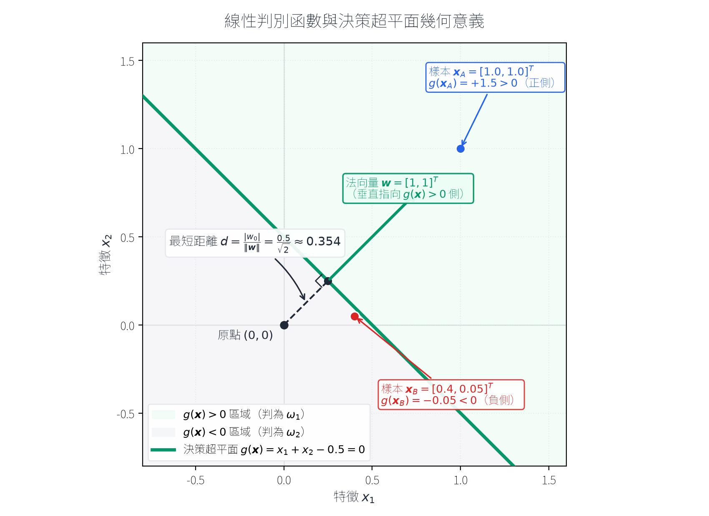
AI 生圖可用：重繪此示意圖的提示詞（結構化）
<div class="ai-illustration" data-diagram-id="kp-1" data-status="pending"> <details><summary>🤖 AI 生圖可用：重繪此示意圖的提示詞（結構化）</summary> <pre class="ai-illustration-prompt">WHAT A clear 2D coordinate geometry plane illustrating the linear decision hyperplane g(x) = x1 + x2 - 0.5 = 0. The green straight boundary cuts the space into two half-planes: the upper-right positive region g(x) > 0 shaded in soft emerald tint (#ecfdf5), and the lower-left negative region g(x) < 0 shaded in light gray (#f3f4f6). A normal vector arrow w = [1, 1]^T starts on the line and points perpendicular into the positive side. A dashed orthogonal segment connects the origin (0,0) to the line's projection point (0.25, 0.25) with a right-angle marker, labeled with distance d = |w0| / ||w|| = 0.5 / sqrt(2) approx 0.354. Two test sample points from Example 3.1 are annotated: xA = [1.0, 1.0]^T on the positive side with g(xA) = +1.5, and xB = [0.4, 0.05]^T on the negative side with g(xB) = -0.05. WHY The key insight is the geometric interpretation of linear classifiers: the weight vector w is not merely an algebraic slope or multiplier, but the exact normal vector perpendicular to the decision boundary, and the signed value g(x) directly measures the proportional directional distance to the hyperplane. MUST show - Linear boundary line x1 + x2 - 0.5 = 0 with distinct emerald green stroke (#059669). - Normal vector w = [1, 1]^T perpendicular to the boundary, pointing toward the positive half-space. - Shortest distance from the origin d = 0.354 with orthogonal right-angle symbol. - Shaded positive and negative decision half-planes. - Example points xA and xB with calculated signs and values. - Clean emerald and gray technical palette, clear mathematical annotations in Traditional Chinese. AVOID - Do not draw w along or parallel to the decision line. - Do not omit the distance d projection to the origin. - Do not use random nonlinear curves or unrelated abstract neural network nodes. - No cluttered overlapping text or dark unreadable backgrounds. STYLE Clean mathematical textbook geometry diagram, precise vectors and coordinate grid, restrained emerald green and neutral gray palette, crisp typography.</pre> </details> </div>
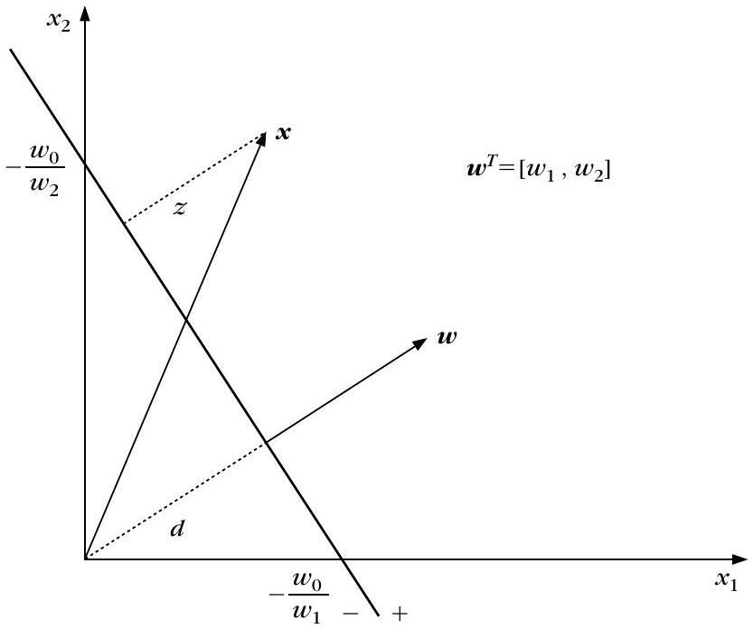
一句話：線性分類器把決策曲面簡化成最單純的形狀——一個超平面 $g(\boldsymbol{x})=\boldsymbol{w}^T\boldsymbol{x}+w_0=0$——用一條直線（或超平面）把特徵空間切成兩半。
權重向量的幾何意義：若 $\boldsymbol{x}_1,\boldsymbol{x}_2$ 是超平面上任兩點，則 $\boldsymbol{w}^T\boldsymbol{x}_1+w_0=\boldsymbol{w}^T\boldsymbol{x}_2+w_0=0$，兩式相減得 $$ \boldsymbol{w}^T(\boldsymbol{x}_1-\boldsymbol{x}_2)=0 $$ $\boldsymbol{x}_1-\boldsymbol{x}_2$ 這個差向量本身就躺在超平面上（連接平面上任兩點），卻與 $\boldsymbol{w}$ 垂直——這代表 $\boldsymbol{w}$ 是超平面的法向量，永遠垂直指向超平面。
點到超平面的距離：原點到超平面的距離是 $$ d=\frac{|w_0|}{\sqrt{w_1^2+w_2^2}}=\frac{|w_0|}{\|\boldsymbol{w}\|} $$ 任意點 $\boldsymbol{x}$ 到超平面的距離則是 $$ z=\frac{|g(\boldsymbol{x})|}{\|\boldsymbol{w}\|} $$ 也就是說，$|g(\boldsymbol{x})|$ 本身就正比於這個點到決策超平面的距離；$g(\boldsymbol{x})$ 在平面一側是正值、另一側是負值，符號直接告訴我們分類結果。$w_0=0$ 時超平面通過原點。
數值範例：權重向量 $\boldsymbol{w}=[1,1]^T$、$w_0=-0.5$，超平面是 $x_1+x_2-0.5=0$。原點到此線的距離 $d=\frac{0.5}{\sqrt{1^2+1^2}}=\frac{0.5}{\sqrt2}\approx0.354$。點 $[0.4,0.05]^T$ 代入 $g(\boldsymbol{x})=0.4+0.05-0.5=-0.05$，是負值、落在超平面「負」的一側；點 $[1,1]^T$ 代入得 $g=1.5$，是正值。
若 $\boldsymbol{x}_1,\boldsymbol{x}_2$ 是同一個決策超平面 $g(\boldsymbol{x})=\boldsymbol{w}^T\boldsymbol{x}+w_0=0$ 上的兩點，可以推出權重向量 $\boldsymbol{w}$ 與什麼方向的關係？
感知器演算法：用錯誤驅動的疊代學習
▼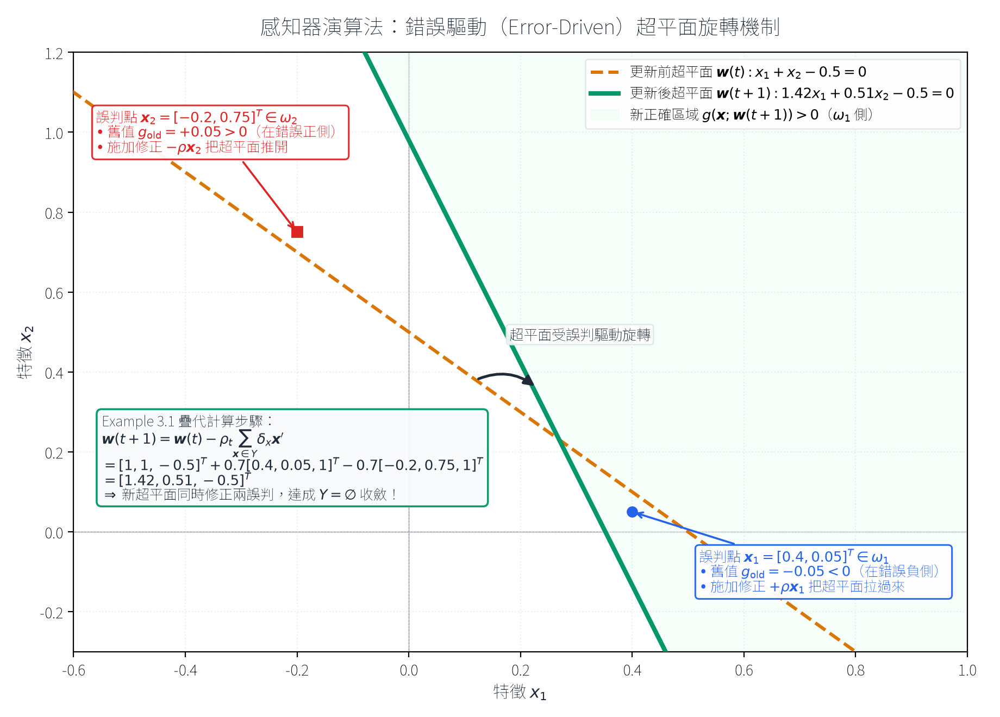
AI 生圖可用：重繪此示意圖的提示詞（結構化）
<div class="ai-illustration" data-diagram-id="kp-2" data-status="pending"> <details><summary>🤖 AI 生圖可用：重繪此示意圖的提示詞（結構化）</summary> <pre class="ai-illustration-prompt">WHAT A precise 2D coordinate plane demonstrating the error-driven update of the Perceptron algorithm from textbook Example 3.1. The initial dashed orange hyperplane w(t): x1 + x2 - 0.5 = 0 misclassifies two points: x1 = [0.4, 0.05]^T (blue circle in omega_1 on the negative side with g = -0.05) and x2 = [-0.2, 0.75]^T (red square in omega_2 on the positive side with g = +0.05). Under the learning rate rho = 0.7, correction vectors pull the hyperplane toward x1 and push it away from x2, rotating it into the solid emerald green line w(t+1): 1.42 x1 + 0.51 x2 - 0.5 = 0, which correctly classifies both samples with zero remaining errors (Y = empty set). WHY The crucial counterintuitive cause-and-effect is that Perceptron weight updates are directly determined by the misclassified samples themselves: error vectors act as physical torques that rotate and translate the decision hyperplane until all misclassified points are enclosed on their correct sides. MUST show - Dashed orange initial boundary line x1 + x2 - 0.5 = 0. - Solid emerald green updated boundary line 1.42 x1 + 0.51 x2 - 0.5 = 0. - Misclassified point x1 in omega_1 and misclassified point x2 in omega_2 with signed error values. - Directional arrow showing the rotation from old to new hyperplane. - Mathematical derivation box showing w(t+1) vector arithmetic and final convergence state. - Emerald green (#059669), amber orange, soft red, and neutral gray palette with Traditional Chinese text. AVOID - Do not show a smooth curve or generic sigmoid gradient descent landscape. - Do not omit the specific numerical coordinates from Example 3.1. - Do not draw parallel shifted lines without rotation. - No overlapping text boxes or unreadable contrast. STYLE Clean engineering textbook diagram, crisp geometric lines, contrasting dashed/solid boundaries, technical annotations, clear rotational dynamics.</pre> </details> </div>
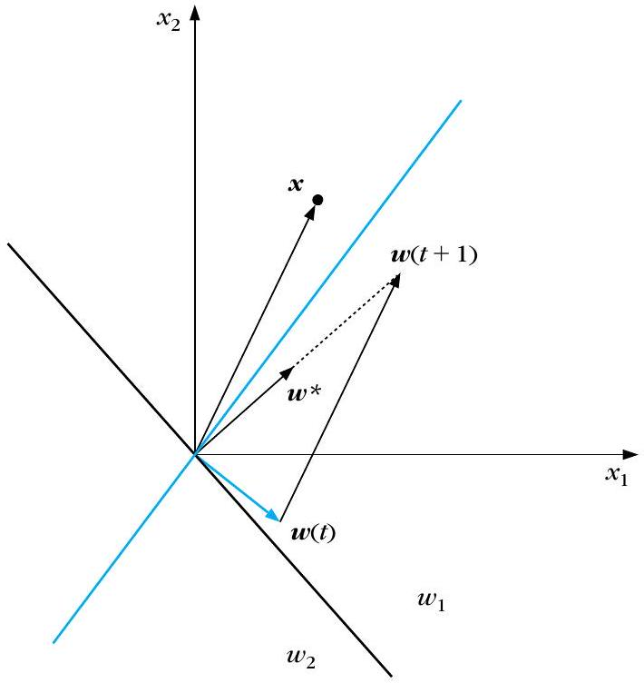
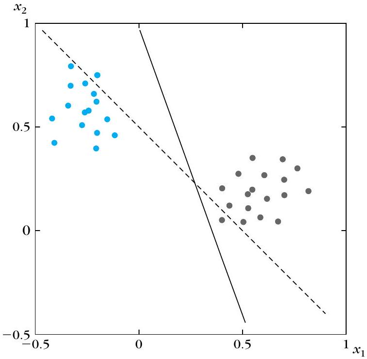
一句話：感知器演算法（Perceptron Algorithm）假設兩類線性可分，透過反覆修正權重向量、把每一個目前分類錯誤的樣本「拉回正確的一側」，最終找到一個能完全分開兩類的超平面。
線性可分的定義：存在 $\boldsymbol{w}^*$ 使得 $\boldsymbol{w}^{*T}\boldsymbol{x}\gt 0,\forall\boldsymbol{x}\in\omega_1$ 且 $\boldsymbol{w}^{*T}\boldsymbol{x}\lt 0,\forall\boldsymbol{x}\in\omega_2$（把 $w_0$ 併進擴增向量 $\boldsymbol{x}'=[\boldsymbol{x}^T,1]^T$ 就能涵蓋不過原點的情況）。
感知器代價函數： $$ J(\boldsymbol{w})=\sum_{\boldsymbol{x}\in Y}(\delta_x\boldsymbol{w}^T\boldsymbol{x}) $$ 其中 $Y$ 是目前被誤判的樣本集合，$\delta_x=-1$（若 $\boldsymbol{x}\in\omega_1$）或 $+1$（若 $\boldsymbol{x}\in\omega_2$）。誤判時這一項恆為正，$J(\boldsymbol{w})\ge0$，$Y=\emptyset$（全部分對）時 $J=0$——這正是我們要的解。
梯度下降更新式：$J(\boldsymbol{w})$ 是分段線性、在誤判集合切換處不可微，但在其他地方梯度是 $\frac{\partial J}{\partial\boldsymbol{w}}=\sum_{\boldsymbol{x}\in Y}\delta_x\boldsymbol{x}$，代入梯度下降規則 $\boldsymbol{w}(t+1)=\boldsymbol{w}(t)-\rho_t\frac{\partial J}{\partial\boldsymbol{w}}$ 得到 $$ \boldsymbol{w}(t+1)=\boldsymbol{w}(t)-\rho_t\sum_{\boldsymbol{x}\in Y}\delta_x\boldsymbol{x} $$ 這個式子在所有點都有定義，即為感知器演算法：隨機初始化 $\boldsymbol{w}(0)$，每一輪找出全部誤判樣本 $Y$、依上式修正權重，直到 $Y=\emptyset$。
數值範例（Example 3.1）：目前權重 $\boldsymbol{w}(t)=[1,1,-0.5]^T$（超平面 $x_1+x_2-0.5=0$），$\rho_t=0.7$，誤判了 $[0.4,0.05]^T\in\omega_1$（擴增後 $[0.4,0.05,1]^T$，$\delta_x=-1$）與 $[-0.2,0.75]^T\in\omega_2$（擴增後 $[-0.2,0.75,1]^T$，$\delta_x=+1$）。更新： $$ \boldsymbol{w}(t+1)=\begin{bmatrix}1\\1\\-0.5\end{bmatrix}-0.7(-1)\begin{bmatrix}0.4\\0.05\\1\end{bmatrix}-0.7(+1)\begin{bmatrix}-0.2\\0.75\\1\end{bmatrix}=\begin{bmatrix}1.42\\0.51\\-0.5\end{bmatrix} $$ 新的超平面 $1.42x_1+0.51x_2-0.5=0$ 正確分開了所有點，演算法終止。
💡 核心概念與操作導引
感知器代價函數 $J(\boldsymbol{w})=\sum_{\boldsymbol{x}\in Y}(\delta_x\boldsymbol{w}^T\boldsymbol{x})$ 中的 $Y$ 代表什麼？
感知器演算法的收斂證明
▼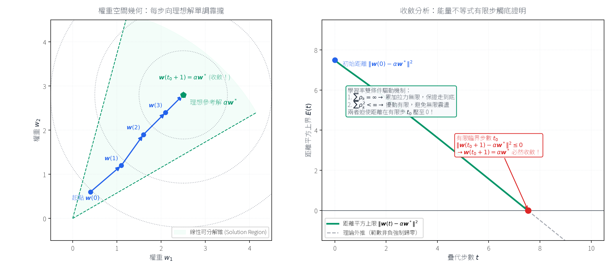
AI 生圖可用：重繪此示意圖的提示詞（結構化）
<div class="ai-illustration" data-diagram-id="kp-3" data-status="pending"> <details><summary>🤖 AI 生圖可用：重繪此示意圖的提示詞（結構化）</summary> <pre class="ai-illustration-prompt">WHAT A dual-panel technical mathematical diagram explaining the finite-step convergence proof of the Perceptron algorithm. The left panel shows the 2D weight space (w1, w2) with a green solution cone and a target ideal scaled solution alpha * w*. Dashed concentric circles center at alpha * w*, and an iterative step-by-step path w(0) -> w(1) -> w(2) -> w(3) -> w(t0+1) shows the Euclidean distance strictly decreasing towards the solution cone. The right panel plots the distance-squared upper bound curve E(t) = ||w(t) - alpha * w*||^2 monotonically decreasing as a function of iteration steps t, hitting zero at a finite critical step t0 due to the dual conditions on learning rates: infinite sum of rho_k forcing global progress and finite sum of rho_k^2 bounding perturbation noise. WHY Because the Perceptron cost function is piecewise linear and non-differentiable, conventional gradient descent convergence proofs fail; the crucial proof mechanism is tracking the monotonic shrinkage of the geometric Euclidean distance to an ideal solution vector, guaranteeing termination in finite steps. MUST show - Left panel: 2D weight space with the linear solution cone, target alpha * w*, concentric distance contour rings, and progressive step path w(0) to w(t0+1). - Right panel: Monotonically decreasing energy upper bound curve hitting zero at critical step t0. - Clear mathematical notation of the dual learning rate conditions (sum rho_k = infinity, sum rho_k^2 < infinity). - Clean emerald green (#059669), cobalt blue (#2563eb), crimson red (#dc2626), and neutral gray palette with Traditional Chinese labels. AVOID - Do not show smooth convex bowl optimization curves (no continuous Hessian or loss contour bowls). - Do not omit the critical step t0 annotation. - Do not use abstract ungrounded graphs without coordinate axes and mathematical labels. - No cluttered or overlapping text. STYLE Clean mathematical textbook infographic, exact geometric vector trajectories and function plot, restrained emerald-blue-gray technical palette, readable typography.</pre> </details> </div>
一句話：感知器演算法不是標準的梯度下降法（代價函數不可微），所以需要一個獨立的證明來保證它真的會在有限步內收斂到解——這個證明的核心技巧是追蹤 $\boldsymbol{w}(t)$ 跟某個理想解 $\alpha\boldsymbol{w}^*$ 的距離會單調縮小。
證明大意：令 $\alpha$ 為正實數、$\boldsymbol{w}^*$ 是一個解。從更新式出發，對 $\|\boldsymbol{w}(t+1)-\alpha\boldsymbol{w}^*\|^2$ 展開平方，並利用「誤判時 $-\sum_{\boldsymbol{x}\in Y}\delta_x\boldsymbol{w}^T(t)\boldsymbol{x}\lt 0$」這個事實，可以推出不等式 $$ \|\boldsymbol{w}(t+1)-\alpha\boldsymbol{w}^*\|^2\le\|\boldsymbol{w}(t)-\alpha\boldsymbol{w}^*\|^2+\rho_t^2\beta^2-2\rho_t\alpha|\gamma| $$ 其中 $\beta^2$ 是所有可能誤判子集合能造成的最大修正量平方，$\gamma$ 是一個恆負的量（訓練集固定後就是常數）。選定 $\alpha=\frac{\beta^2}{2|\gamma|}$、並把不等式從 $t=0$ 一路累加到 $t$，得到 $$ \|\boldsymbol{w}(t+1)-\alpha\boldsymbol{w}^*\|^2\le\|\boldsymbol{w}(0)-\alpha\boldsymbol{w}^*\|^2+\beta^2\Big(\sum_{k=0}^t\rho_k^2-\sum_{k=0}^t\rho_k\Big) $$
關鍵：學習率序列 $\rho_t$ 的兩個條件：只要 $\rho_t$ 滿足 $$ \lim_{t\to\infty}\sum_{k=0}^t\rho_k=\infty,\qquad \lim_{t\to\infty}\sum_{k=0}^t\rho_k^2\lt \infty $$ 右式的 $\sum\rho_k^2-\sum\rho_k$ 遲早會趨向 $-\infty$，使右手邊變成非正值。但左手邊是範數平方，恆非負，於是在某個有限步 $t_0$ 必然變成 $$ \boldsymbol{w}(t_0+1)=\alpha\boldsymbol{w}^* $$ 也就是說，演算法在有限步內收斂到一個解（是 $\boldsymbol{w}^*$ 的某個縮放版本，並非唯一解，因為能分開兩類的超平面通常不止一個）。
條件的白話翻譯：$\rho_t=c/t$ 就是一個滿足兩條件的典型例子——修正量必須「越來越小」（否則永遠在解附近震盪、不收斂），但又「不能太快趨近零」（否則還沒走到解就提早停下來）。也可以證明常數學習率 $\rho_t=\rho$（只要 $\rho$ 落在合理範圍內）一樣會收斂。學習率序列的選擇直接影響收斂速度。
感知器演算法收斂證明中，學習率序列 $\rho_t$ 需要同時滿足哪兩個條件？
獎懲式感知器：逐一樣本的線上學習變形
▼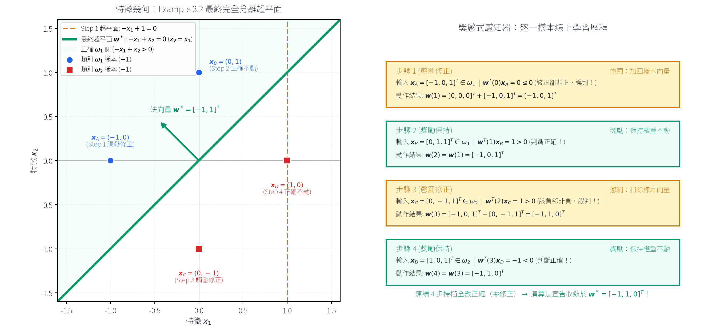
AI 生圖可用：重繪此示意圖的提示詞（結構化）
<div class="ai-illustration" data-diagram-id="kp-4" data-status="pending"> <details><summary>🤖 AI 生圖可用：重繪此示意圖的提示詞（結構化）</summary> <pre class="ai-illustration-prompt">WHAT A dual-panel technical diagram illustrating the Reward-and-Punishment Perceptron online learning algorithm from textbook Example 3.2. The left panel shows the 2D feature space with four samples: omega_1 points xA = (-1,0), xB = (0,1) (blue circles) and omega_2 points xC = (0,-1), xD = (1,0) (red squares). It shows the transition from the Step 1 vertical hyperplane -x1 + 1 = 0 to the final solid emerald green boundary w*: -x1 + x2 = 0 (line x2 = x1 passing through origin), correctly separating the four points with normal vector w* = [-1, 1]^T pointing into the shaded omega_1 half-plane. The right panel is a step-by-step online state timeline displaying Steps 1 to 4: Step 1 (xA misclassified -> penalty: add sample -> w(1)=[-1,0,1]^T), Step 2 (xB correct -> reward: do nothing -> w(2)=[-1,0,1]^T), Step 3 (xC misclassified -> penalty: subtract sample -> w(3)=[-1,1,0]^T), Step 4 (xD correct -> reward: do nothing -> w(4)=[-1,1,0]^T), concluding with 4 consecutive zero-update steps declaring convergence. WHY The counterintuitive beauty of the reward-and-punishment variant is its computational efficiency: correctly classified samples trigger zero updates (the 'reward'), and weights are only nudged when errors occur (the 'punishment'), leading cleanly to a separating hyperplane without processing unnecessary batch matrices. MUST show - Left panel: Exact 4-sample geometry from Example 3.2, intermediate Step 1 boundary, and final diagonal line -x1 + x2 = 0 with normal vector and shaded half-space. - Right panel: 4 clear sequential step cards contrasting amber penalty actions with emerald reward/idle states. - Explicit convergence statement when all 4 samples pass in a full cycle without modification. - Emerald green (#059669), amber (#d97706), cobalt blue, and crisp neutral gray palette with Traditional Chinese text. AVOID - Do not show batch loss curves or offline matrix inversions. - Do not omit the four sample coordinates or the step-by-step vector arithmetic. - Do not use abstract unlabelled boxes without mathematical details. - No overlapping text or low contrast elements. STYLE Clean mathematical textbook infographic, balanced dual-panel composition, crisp geometric lines, color-coded state flowcharts, readable Traditional Chinese typography.</pre> </details> </div>
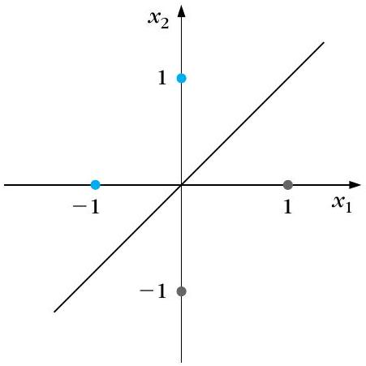
一句話：除了「一次算出所有誤判樣本再統一修正」的批次版本，感知器演算法還有一個更簡單流行的變形——訓練樣本一個接一個依序丟進來，答對了什麼都不做（獎勵），答錯了才修正權重（懲罰），這正是「獎懲機制（reward and punishment）」的由來。
更新規則：令 $\boldsymbol{x}_{(t)}$ 是第 $t$ 步呈現的樣本： $$ \boldsymbol{w}(t+1)=\begin{cases} \boldsymbol{w}(t)+\rho\boldsymbol{x}_{(t)}, & \boldsymbol{x}_{(t)}\in\omega_1 \text{ 且 } \boldsymbol{w}^T(t)\boldsymbol{x}_{(t)}\le0\text{（該加分卻判成負，補回來）}\\ \boldsymbol{w}(t)-\rho\boldsymbol{x}_{(t)}, & \boldsymbol{x}_{(t)}\in\omega_2 \text{ 且 } \boldsymbol{w}^T(t)\boldsymbol{x}_{(t)}\ge0\text{（該扣分卻判成正，扣回來）}\\ \boldsymbol{w}(t), & \text{其他情況（分對了，不動）} \end{cases} $$ 樣本反覆循環呈現，直到連續掃過一整輪都沒有任何修正，代表全部分類正確、演算法終止。
數值範例（Example 3.2）：二維空間四個點，$\omega_1:(-1,0),(0,1)$、$\omega_2:(0,-1),(1,0)$，$\rho=1$，擴增後的初始權重 $\boldsymbol{w}(0)=[0,0,0]^T$。逐步計算（擴增向量 $[x_1,x_2,1]^T$）：
| 步驟 | 樣本（擴增） | $\boldsymbol{w}^T(t)\boldsymbol{x}$ | 動作 | 新 $\boldsymbol{w}$ |
|---|---|---|---|---|
| 1 | $[-1,0,1]^T\in\omega_1$ | $0$（$\le0$，該+卻沒過） | $\boldsymbol{w}(1)=\boldsymbol{w}(0)+[-1,0,1]^T$ | $[-1,0,1]^T$ |
| 2 | $[0,1,1]^T\in\omega_1$ | $1\gt 0$ | 不動 | $[-1,0,1]^T$ |
| 3 | $[0,-1,1]^T\in\omega_2$ | $1\gt 0$（該$-$卻沒過） | $\boldsymbol{w}(3)=\boldsymbol{w}(2)-[0,-1,1]^T$ | $[-1,1,0]^T$ |
| 4 | $[1,0,1]^T\in\omega_2$ | $-1\lt 0$ | 不動 | $[-1,1,0]^T$ |
| 5–7 | 再掃一輪 | 皆已正確 | 連續不動 | $[-1,1,0]^T$ |
連續四步都不需要修正，代表全部樣本已正確分類，演算法終止，解為 $\boldsymbol{w}=[-1,1,0]^T$，也就是超平面 $-x_1+x_2=0$（即 $x_1=x_2$），一條通過原點、把四個點正確一分為二的直線。
歷史小知識：感知器演算法最早由 Rosenblatt 於 1950 年代末提出，用來訓練「感知器（perceptron）」——模擬大腦神經元的基本運算單元，是後續複雜學習網路的基礎building block。
在獎懲式感知器演算法中，如果目前呈現的樣本已經被正確分類，權重向量會發生什麼變化？
感知器神經元模型與口袋演算法
▼AI 生圖可用：重繪此示意圖的提示詞（結構化）
<div class="ai-illustration" data-diagram-id="kp-5" data-status="pending"> <details><summary> AI 生圖可用：重繪此示意圖的提示詞（結構化）</summary> <pre class="ai-illustration-prompt">WHAT Draw a wide educational diagram of a perceptron neuron: several input dots x1, x2, ..., xl feed through visibly different-weight connections into a summation node, then a hard step limiter, then two binary outputs. Below it, split the training story into two visual trajectories using the same ambiguous point cloud: a separable case reaches one stable separating line, while an inseparable case shows ordinary perceptron boundaries cycling in a loop and a green pocket preserving the best boundary snapshot. WHY The image must explain the causal turn: weighted evidence is thresholded into a binary decision, but non-linearly-separable data makes the ordinary perceptron oscillate forever; the pocket algorithm solves the practical problem by retaining the best solution seen so far rather than waiting for perfect convergence. MUST show - Input nodes, unequal connection thickness, a sum node with a threshold input, a visibly discontinuous step response, and -1/+1 output. - A clear separable trajectory that settles on a boundary. - A clear inseparable loop of changing boundaries and a distinct pocket containing the current best boundary. - Green accent #059669 with grayscale support, high contrast, clean arrows, Traditional Chinese labels. AVOID - Do not make a noun-box flowchart with four isolated terminology boxes. - Do not show a smooth convergent curve for the ordinary perceptron on inseparable data. - Do not imply the pocket makes the data perfectly separable or that it stops because every sample is correct. - No external logos, decorative clip art, tiny unreadable labels, or unrelated formulas. STYLE Minimal vector textbook illustration, white background, precise geometry, restrained green-and-gray palette, clear causal arrows, readable Traditional Chinese typography.</pre> </details> </div>
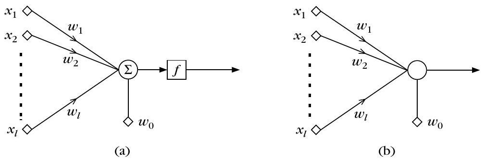
一句話：把感知器演算法收斂後得到的 $\boldsymbol{w},w_0$ 拿去實際分類新樣本，背後對應的就是一個簡單的神經元模型；但如果訓練資料根本不是線性可分的呢？「口袋演算法（pocket algorithm）」就是為了這種現實狀況設計的救援方案。
感知器神經元（McCulloch-Pitts neuron）：分類規則是 $$ \text{若 } \boldsymbol{w}^T\boldsymbol{x}+w_0\gt 0 \Rightarrow \boldsymbol{x}\in\omega_1,\qquad \text{若 } \boldsymbol{w}^T\boldsymbol{x}+w_0\lt 0 \Rightarrow \boldsymbol{x}\in\omega_2 $$ 特徵 $x_1,\ldots,x_l$ 分別乘上對應的突觸權重 $w_i$（synaptic weights）、加總再加上閾值 $w_0$，結果送進一個非線性的「激發函數（activation function）」——最常見是硬限幅器（hard limiter，即階梯函數：$x\lt 0$ 輸出 $-1$、$x\gt 0$ 輸出 $+1$，也可以用 $0/1$）。這整個結構叫做感知器（perceptron）或神經元（neuron），是「學習機器（learning machine）」的一個簡單範例——參數會被一套學習演算法（如感知器演算法）依訓練資料自動更新，藉此「學會」特定任務。
現實問題：感知器演算法收斂的前提是「兩類線性可分」。實務上這個假設常常不成立——這時感知器演算法會永遠震盪，不會停止。
口袋演算法：初始化 $\boldsymbol{w}(0)$（隨機）以及一個「口袋裡」暫存的最佳向量 $\boldsymbol{w}_s$、歷史計數器 $h_s=0$。每一輪照常按感知器規則算出更新後的 $\boldsymbol{w}(t+1)$，用它去測試「目前能正確分類多少個訓練樣本」得到計數 $b$；如果 $b\gt h_s$，就把 $\boldsymbol{w}_s$ 換成 $\boldsymbol{w}(t+1)$、$h_s$ 換成 $b$，然後繼續疊代。也就是說，口袋裡永遠放著「目前為止見過表現最好」的那個權重向量，不管訓練有沒有真正收斂。可以證明這個演算法以機率 1 收斂到最優解（誤判數最少的那個超平面），即使類別根本不是線性可分的。
💡 先看懂，再按按鈕
口袋演算法（pocket algorithm）跟原本的感知器演算法相比，最主要解決了什麼問題？
Kesler 建構法：把多類別問題轉成二元感知器問題
▼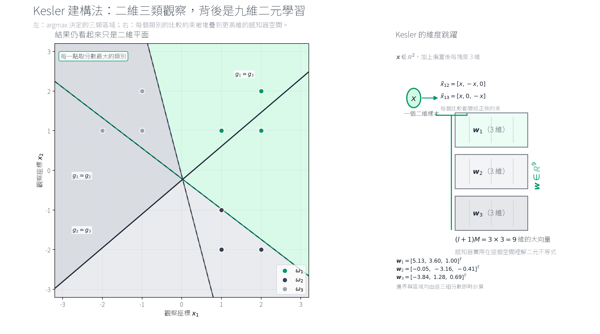
AI 生圖可用：重繪此示意圖的提示詞（結構化）
<div class="ai-illustration" data-diagram-id="kp-6" data-status="pending"> <details><summary> AI 生圖可用：重繪此示意圖的提示詞（結構化）</summary> <pre class="ai-illustration-prompt">WHAT Create a two-panel educational figure. In the left panel, plot the exact three-class Example 3.3 points in a two-dimensional plane, shade the classification regions from the largest of three linear scores, and show the three pairwise decision boundaries. In the right panel, visually lift one 2D sample into two block constraints and stack three 3-dimensional class-weight blocks into one 9-dimensional Kesler vector. WHY The essential counterintuitive point is that a problem that looks like “three classes in 2D” is solved by converting every class comparison into a binary positive-side constraint in a higher-dimensional space; the visible 2D regions are the projection of a 9D construction. MUST show - The exact point sets: omega1 = (1,1),(2,2),(2,1); omega2 = (1,-1),(1,-2),(2,-2); omega3 = (-1,1),(-1,2),(-2,1). - Three score-based colored regions and exact pairwise boundaries from the supplied weight vectors. - A clear lift from x to comparison blocks [x,-x,0] and [x,0,-x], then three 3D blocks forming a 9D weight vector. - Emerald green #059669 plus grayscale, equations only where useful, readable Traditional Chinese labels. AVOID - Do not show three unrelated one-vs-rest boxes without the block construction or dimension jump. - Do not claim the algorithm trains directly in the visible 2D plot. - Do not replace the given numerical data or weights with arbitrary points. - No decorative 3D realism, external resources, or tiny overlapping annotations. STYLE Clean mathematical textbook infographic, precise scatter plot and boundary geometry, restrained emerald-and-gray palette, strong visual arrow for the 2D-to-9D lift, readable Traditional Chinese typography.</pre> </details> </div>
一句話：感知器演算法天生是為兩類問題設計的，但 Kesler 建構法提供了一個聰明的座標轉換技巧，把 $M$ 類問題「攤平」成一個更高維空間裡的標準二元感知器問題，讓同一套演算法直接拿來用。
$M$ 類判別規則：每一類各有一個線性判別函數 $\boldsymbol{w}_i,i=1,\ldots,M$，分類規則是 $$ \boldsymbol{w}_i^T\boldsymbol{x}\gt \boldsymbol{w}_j^T\boldsymbol{x},\quad\forall j\ne i \quad\Rightarrow\quad \boldsymbol{x}\in\omega_i $$
Kesler 建構的技巧：對每個屬於 $\omega_i$ 的訓練向量 $\boldsymbol{x}$，構造 $M-1$ 個區塊向量 $\boldsymbol{x}_{ij}=[\mathbf{0}^T,\ldots,\boldsymbol{x}^T,\ldots,-\boldsymbol{x}^T,\ldots,\mathbf{0}^T]^T$（維度 $(l{+}1)M\times1$）：除了第 $i$ 個區塊放 $\boldsymbol{x}$、第 $j$ 個區塊放 $-\boldsymbol{x}$，其餘全部是 0。同時把所有類別的權重向量串接成一個大向量 $\boldsymbol{w}=[\boldsymbol{w}_1^T,\ldots,\boldsymbol{w}_M^T]^T$。如此一來，「$\boldsymbol{x}\in\omega_i$」這個要求就等價於「對所有 $j\ne i$，$\boldsymbol{w}^T\boldsymbol{x}_{ij}\gt 0$」——這正是標準的二元感知器不等式形式！只要在這個 $(l{+}1)M$ 維的擴增空間裡，用一般的感知器演算法讓全部 $(M{-}1)N$ 個構造出來的向量都落在正側，就解出了原本的 $M$ 類問題（前提是這個問題本身是線性可分的）。
數值範例（Example 3.3）：三類二維問題，$\omega_1:[1,1]^T,[2,2]^T,[2,1]^T$；$\omega_2:[1,-1]^T,[1,-2]^T,[2,-2]^T$；$\omega_3:[-1,1]^T,[-1,2]^T,[-2,1]^T$——三類分別落在不同象限，明顯線性可分。把向量擴增到三維後套用 Kesler 建構，例如 $[1,1]^T$ 屬於 $\omega_1$，會產生 $[1,1,1,-1,-1,-1,0,0,0]^T$（對 $j=2$）和 $[1,1,1,0,0,0,-1,-1,-1]^T$（對 $j=3$）這兩個 9 維向量。對全部 18 個 9 維向量跑感知器演算法（初始權重取 $[0,1]$ 均勻亂數、$\rho_t=0.5$ 固定），4 次疊代後收斂，得到 $$ \boldsymbol{w}_1=[5.13,3.60,1.00]^T,\quad \boldsymbol{w}_2=[-0.05,-3.16,-0.41]^T,\quad \boldsymbol{w}_3=[-3.84,1.28,0.69]^T $$
Kesler 建構法的核心想法是什麼？
均方誤差估計：從機率密度到最小均方誤差的轉向
▼AI 生圖可用：重繪此示意圖的提示詞（結構化）
<div class="ai-illustration" data-diagram-id="kp-7" data-status="pending"> <details><summary> AI 生圖可用：重繪此示意圖的提示詞（結構化）</summary> <pre class="ai-illustration-prompt">WHAT Draw a clean perspective geometry diagram: a translucent green plane spanned by two basis arrows x1 and x2, a target point y floating above it, and a vertical residual dropping to the projection point on the plane. Add a clearly visible right-angle marker at the projection and a compact causal strip showing error minimization leading to orthogonality and then projection. WHY The key insight is the surprising equivalence between algebraic minimum mean-square-error optimization and an ordinary geometric orthogonal projection. The error is not merely “small”; at the optimum it is perpendicular to every direction available in the feature subspace. MUST show - A plane with enough grid lines to read as a subspace, basis directions x1 and x2, target y outside the plane, projected estimate on the plane, and a residual segment. - A prominent right-angle marker and an arrow linking error reduction to the perpendicular condition. - Green accent #059669, gray supporting geometry, high contrast, Traditional Chinese labels, no crowded annotations. AVOID - Do not draw isolated boxes for “MSE”, “projection”, and “orthogonality” connected by arrows with no geometry. - Do not depict the residual as a slanted or parallel vector at the optimum. - Do not imply that y lies inside the feature plane or that projection means nearest coordinate-wise point. - No decorative 3D realism, external resources, or unreadable equations inside the graphic. STYLE Minimal vector textbook geometry, white background, restrained emerald-green and grayscale palette, precise perspective, strong right-angle cue, readable Traditional Chinese typography.</pre> </details> </div>
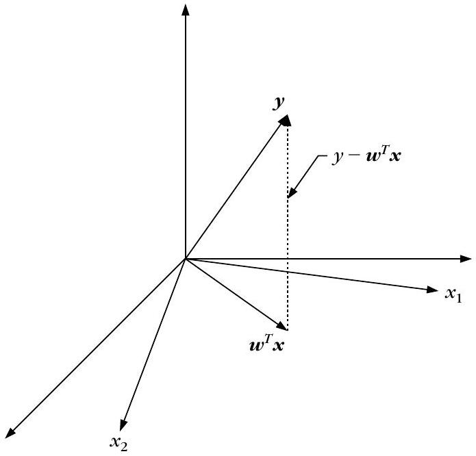
一句話：感知器演算法要求類別線性可分才管用，但現實中類別常常本來就分不開——均方誤差（MSE）方法換一個思路：不要求完美分開，而是讓分類器的輸出 $\boldsymbol{w}^T\boldsymbol{x}$ 盡量逼近一個期望輸出 $y=\pm1$，用最小化「輸出跟期望值的誤差平方」來求權重。
代價函數與解： $$ J(\boldsymbol{w})=E[|y-\boldsymbol{x}^T\boldsymbol{w}|^2],\qquad \hat{\boldsymbol{w}}=\arg\min_{\boldsymbol{w}}J(\boldsymbol{w}) $$ 對 $\boldsymbol{w}$ 微分並令其為 0： $$ \frac{\partial J}{\partial\boldsymbol{w}}=2E[\boldsymbol{x}(y-\boldsymbol{x}^T\boldsymbol{w})]=\mathbf{0} \quad\Rightarrow\quad \hat{\boldsymbol{w}}=R_x^{-1}E[\boldsymbol{x}y] $$ $R_x\equiv E[\boldsymbol{x}\boldsymbol{x}^T]$ 是（自）相關矩陣（在均值為零時等於上一章的共變異數矩陣），$E[\boldsymbol{x}y]$ 是期望輸出與特徵向量的互相關向量。也就是說，MSE 最優解是解一組線性方程式，前提是 $R_x$ 可逆。
幾何直覺：正交投影：把隨機變數看成向量空間裡的點，期望值運算 $E[xy]$ 滿足內積的所有性質（$E[x^2]\ge0$、$E[xy]=E[yx]$、線性性）。在這個空間裡，$\boldsymbol{w}^T\boldsymbol{x}$ 是落在 $x_i$ 們張成的子空間中的一個線性組合。想用這個線性組合去逼近 $y$，誤差就是 $y-\boldsymbol{w}^T\boldsymbol{x}$。剛剛推出的 $\frac{\partial J}{\partial\boldsymbol{w}}=\mathbf{0}$（正交條件）恰好說明：最小均方誤差解，就是誤差向量與每個 $x_i$ 都垂直的那個解——換句話說，$y$ 被投影到 $x_i$ 們張成的子空間上，$\hat{\boldsymbol{w}}^T\boldsymbol{x}$ 正是這個「正交投影」。
多類別推廣：$M$ 個判別函數 $g_i(\boldsymbol{x})=\boldsymbol{w}_i^T\boldsymbol{x}$，期望輸出改成 $y_i=1$（若 $\boldsymbol{x}\in\omega_i$）或 $0$（否則）。整體代價 $E[\|\boldsymbol{y}-W^T\boldsymbol{x}\|^2]$ 可以拆解成 $M$ 個彼此獨立的純量 MSE 子問題，各自求解——換句話說，設計每個判別函數只需要單獨用它自己那組 $0/1$ 期望輸出去解一次 MSE，互不干擾。
💡 把代數解拖到幾何裡看
MSE 準則推出的最佳權重 $\hat{\boldsymbol{w}}=R_x^{-1}E[\boldsymbol{x}y]$ 有什麼幾何解讀？
隨機逼近與 LMS 演算法：不知道機率分布也能學
▼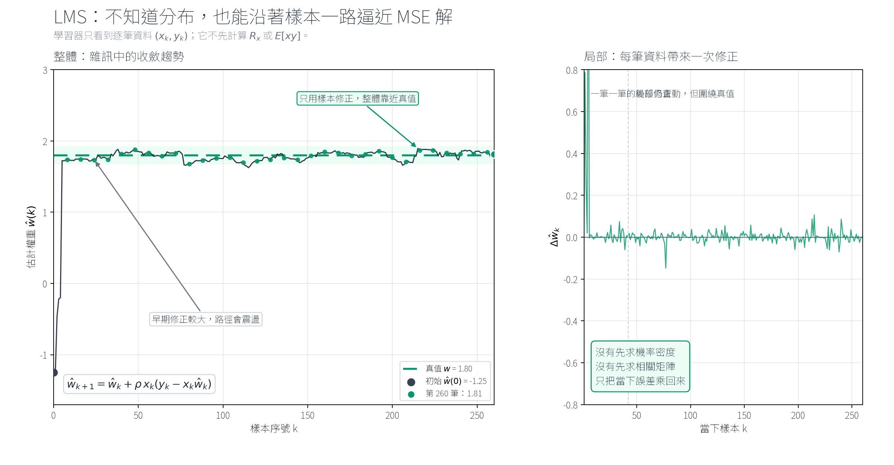
AI 生圖可用：重繪此示意圖的提示詞（結構化）
<div class="ai-illustration" data-diagram-id="kp-8" data-status="pending"> <details><summary> AI 生圖可用：重繪此示意圖的提示詞（結構化）</summary> <pre class="ai-illustration-prompt">WHAT Draw a quantitative two-panel convergence figure for LMS. The main panel shows an estimated scalar weight starting far from the target, wobbling from sample to sample, and gradually settling around a dashed true-value line. A smaller companion panel shows the individual positive and negative sample corrections that drive the trajectory. WHY The counterintuitive message is that the learner does not need the underlying probability distribution, correlation matrix, or cross-correlation vector. Replacing an unavailable expectation with one current sample creates noisy local motion, yet the aggregate path approaches the same MSE solution. MUST show - A reproducible-looking noisy trajectory \hat w(k), a clearly labeled true w line, and a visible early-oscillation-to-late-stabilization trend. - Sample-by-sample correction impulses or curve, including both positive and negative updates. - The LMS update formula, the idea that only (x_k,y_k) is observed, and a note that R_x and E[xy] are not supplied. - Emerald green #059669 with grayscale support, clear axes, readable Traditional Chinese labels, no overlapping annotations. AVOID - Do not draw a perfectly smooth monotonic curve or imply every update improves the estimate. - Do not show the probability distribution as known to the learner. - Do not replace stochastic corrections with a pre-rendered fake animation or unexplained decorative waves. - No external resources, dense legend clutter, or tiny labels. STYLE Clean mathematical textbook plot, deterministic-looking sample path, restrained emerald-and-gray palette, sparse annotations, high-contrast Traditional Chinese typography.</pre> </details> </div>
一句話：MSE 最優解 $\hat{\boldsymbol{w}}=R_x^{-1}E[\boldsymbol{x}y]$ 需要先知道 $R_x$ 和 $E[\boldsymbol{x}y]$，但這兩個量本身就需要知道機率分布才能算——如果分布已知，乾脆直接用貝氏分類器就好，何必繞這一圈？LMS（最小均方，又稱 Widrow-Hoff）演算法的貢獻，就是提供一套不需要知道任何分布資訊、只靠一筆一筆樣本就能疊代逼近 MSE 解的方法。
隨機逼近（Robbins-Monro）的核心想法：考慮形如 $E[F(\boldsymbol{x}_k,\boldsymbol{w})]=\mathbf{0}$ 的方程式（$\boldsymbol{x}_k$ 是同分布的隨機樣本序列），用疊代 $$ \hat{\boldsymbol{w}}(k)=\hat{\boldsymbol{w}}(k-1)+\rho_k F(\boldsymbol{x}_k,\hat{\boldsymbol{w}}(k-1)) $$ 拿「當下這筆樣本」取代「算不出來的期望值」。只要 $\rho_k$ 滿足前面提過的兩個經典條件（$\sum\rho_k\to\infty$、$\sum\rho_k^2\lt \infty$，因此 $\rho_k\to0$），這個疊代就會依機率收斂到真正的解，甚至有均方收斂：$E[\|\hat{\boldsymbol{w}}(k)-\boldsymbol{w}\|^2]\to0$。
熱身範例：簡單方程式 $E[x_k-w]=0$，取 $\rho_k=1/k$，疊代式化簡成 $$ \hat{w}(k)=\frac{k-1}{k}\hat{w}(k-1)+\frac{1}{k}x_k=\frac{1}{k}\sum_{r=1}^k x_r $$ 答案正是樣本平均——完全符合直覺！
套用到分類問題：LMS 演算法：把這套技巧用在求解 MSE 的正交條件上，得到 $$ \hat{\boldsymbol{w}}(k)=\hat{\boldsymbol{w}}(k-1)+\rho_k\boldsymbol{x}_k\big(y_k-\boldsymbol{x}_k^T\hat{\boldsymbol{w}}(k-1)\big) $$ $(y_k,\boldsymbol{x}_k)$ 是依序送入的訓練樣本對。這正是 1960 年代初 Widrow 與 Hoff 提出的 LMS（least mean squares）演算法，漸進收斂到 MSE 解。
常數學習率的實務考量：若用固定 $\rho$ 取代遞減序列 $\rho_k$，理論上不再精確收斂到 MSE 解，但只要 $0\lt \rho\lt 2/\text{trace}\{R_x\}$，估計值的期望仍會趨近 $\boldsymbol{w}_{\text{MSE}}$、變異數也維持有限——$\rho$ 越小、圍繞 MSE 解的震盪變異越小，但收斂速度也越慢。用固定 $\rho$ 的好處是讓演算法保持「警覺」，能追蹤緩慢變動（非定常）的統計特性。
與 adaline 的關係：LMS 訓練的是一個「不含非線性激發函數」的線性神經元（把期望輸出直接接在加總器後面，而非感知器那樣接在硬限幅器後面），這個架構叫 adaline（adaptive linear element）。訓練完成、權重固定後，才會加上硬限幅器變成跟一般感知器一樣的分類器——差別只在訓練演算法用的是 LMS 而非感知器演算法。
💡 讓每一筆樣本取代算不出的期望值
LMS 演算法解決了 MSE 方法的什麼實務痛點？
誤差平方和估計：偽逆矩陣與最小平方解
▼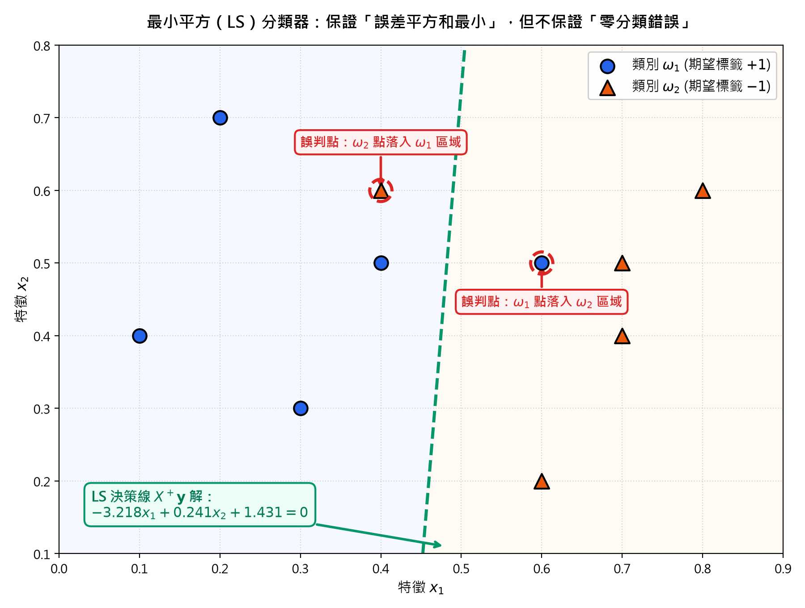
AI 生圖可用：重繪此示意圖的提示詞（結構化）
WHAT: A 2D scatter plot of two overlapping data classes with a linear decision boundary line derived from Least Squares (pseudoinverse solution). Class 1 (blue circles) and Class 2 (orange triangles) have overlapping regions. A green dashed decision boundary line separates the plane into two decision regions. Two specific data points near the boundary (one from Class 1, one from Class 2) fall on the wrong side of the line and are highlighted with red dashed warning circles and arrows. WHY: To demonstrate the counter-intuitive principle that Least Squares (LS) regression minimizes total sum of squared errors, but does NOT guarantee zero classification errors or linear separability. MUST show: 2D scatter points of Class 1 and Class 2, the LS linear decision line (-3.218*x1 + 0.241*x2 + 1.431 = 0), highlighted misclassified points with red warning indicators, and clear region shading. AVOID: Assuming the dataset is linearly separable, omitting the misclassified points, or drawing an idealized zero-error boundary. STYLE: Clean academic data visualization, vector style, clear high-contrast labels, soft pastel background region fill.
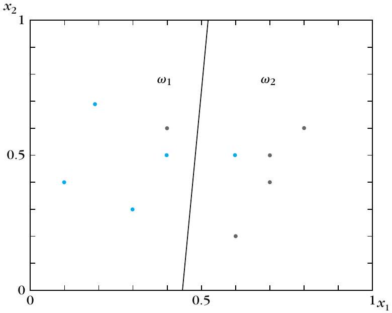
一句話：跟 MSE 用「期望值」不同，誤差平方和（Sum of Error Squares, LS）準則直接把有限筆訓練樣本的誤差平方「加總」而不取平均，這樣一來完全不需要任何機率分布的資訊，答案是一個純代數的線性方程組解。
代價函數與解： $$ J(\boldsymbol{w})=\sum_{i=1}^N(y_i-\boldsymbol{x}_i^T\boldsymbol{w})^2\equiv\sum_{i=1}^N e_i^2 $$ 對 $\boldsymbol{w}$ 微分令其為 0： $$ \sum_{i=1}^N\boldsymbol{x}_i(y_i-\boldsymbol{x}_i^T\hat{\boldsymbol{w}})=0 \;\Rightarrow\; \Big(\sum_{i=1}^N\boldsymbol{x}_i\boldsymbol{x}_i^T\Big)\hat{\boldsymbol{w}}=\sum_{i=1}^N(\boldsymbol{x}_iy_i) $$ 把 $N$ 筆訓練向量堆成 $N\times l$ 矩陣 $X$（每列是一個 $\boldsymbol{x}_i^T$）、期望輸出堆成向量 $\boldsymbol{y}$，則 $\sum\boldsymbol{x}_i\boldsymbol{x}_i^T=X^TX$、$\sum\boldsymbol{x}_iy_i=X^T\boldsymbol{y}$，方程式化簡成 $$ (X^TX)\hat{\boldsymbol{w}}=X^T\boldsymbol{y} \;\Rightarrow\; \hat{\boldsymbol{w}}=(X^TX)^{-1}X^T\boldsymbol{y}\equiv X^+\boldsymbol{y} $$ $X^+\equiv(X^TX)^{-1}X^T$ 叫做 $X$ 的偽逆矩陣（pseudoinverse），是一般矩陣求逆的推廣：若 $X$ 剛好是 $l\times l$ 可逆方陣，$X^+$ 就退化成一般的 $X^{-1}$。樣式識別中通常 $N\gt l$（方程式比未知數多），沒有精確解，但偽逆矩陣給出的正是「誤差平方和最小」的那個解。
數值範例（Example 3.4）：$\omega_1$ 五個點 $[0.2,0.7]^T,[0.3,0.3]^T,[0.4,0.5]^T,[0.6,0.5]^T,[0.1,0.4]^T$，$\omega_2$ 五個點 $[0.4,0.6]^T,[0.6,0.2]^T,[0.7,0.4]^T,[0.8,0.6]^T,[0.7,0.5]^T$。擴增（第三維補 1）後堆成 $10\times3$ 矩陣 $X$，算出 $$ X^TX=\begin{bmatrix}2.8&2.24&4.8\\2.24&2.41&4.7\\4.8&4.7&10\end{bmatrix},\qquad X^T\boldsymbol{y}=\begin{bmatrix}-1.6\\0.1\\0.0\end{bmatrix} $$ （$\boldsymbol{y}$ 是五個 $+1$ 接五個 $-1$）。解線性方程組得 $[w_1,w_2,w_0]=[-3.218,0.241,1.431]$。這個資料集其實不是線性可分的（兩類邊界有重疊），LS 分類器會把某些點分錯，但它保證得到的是「誤差平方和最小」的那條線。
這在做什麼
展示**誤差平方和（Least Squares, LS）**分類器如何利用偽逆矩陣 $\mathbf{X}^+ = (\mathbf{X}^T\mathbf{X})^{-1}\mathbf{X}^T$ 代數解出最佳權重 $\hat{\mathbf{w}} = [w_1, w_2, w_0]^T$。當前初始點來自 Example 3.4（5 個 $\omega_1$ 藍點標籤 $+1$，5 個 $\omega_2$ 橘點標籤 $-1$）。
怎麼操作
- 在畫布上用滑鼠或觸控**拖曳任意數據點**，即時觀察決策線與誤判點變化。
- 點擊「重置 Example 3.4 預設點」可還原原始資料座標。
觀察什麼
- 即使兩類資料重疊（非線性可分），LS 分類器仍能解出唯一決策線。
- 觀察誤判點（以紅色雙圈標示）與誤差平方和 $J(\mathbf{w})$：**LS 保證總誤差平方和最小，但不保證零分類錯誤！**
理論基準與公式
代價函數與偽逆矩陣解：
$$J(\mathbf{w}) = \sum_{i=1}^N (y_i - \mathbf{x}_i^T\mathbf{w})^2, \qquad \hat{\mathbf{w}} = (\mathbf{X}^T\mathbf{X})^{-1}\mathbf{X}^T\mathbf{y}$$
誤差平方和（LS）準則跟 MSE 準則最主要的差別是什麼？
均方誤差回歸再探：條件期望值是最佳預測
▼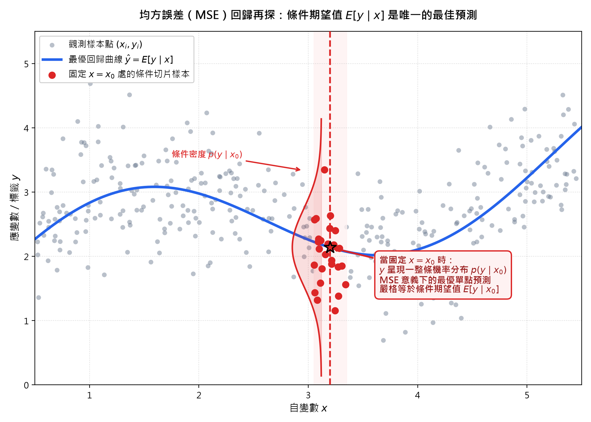
AI 生圖可用：重繪此示意圖的提示詞（結構化）
WHAT: A 2D regression scatter plot showing points distributed along a non-linear curve y = f(x) + noise, with a solid blue curve representing the conditional expectation E[y|x]. At a specific vertical slice x0 = 3.2, a vertical highlight band shows a vertical slice of y-values, with a sideways red Gaussian bell curve representing p(y|x0) and a red star marker at the center of gravity E[y|x0]. WHY: To illustrate that under Mean Squared Error (MSE) regression, for any given x, the optimal single-point prediction is strictly equal to the conditional expectation E[y|x] (the mean of the vertical slice distribution). MUST show: Scatter plot points, non-linear regression curve E[y|x], vertical slice band at x0, sideways Gaussian density curve p(y|x0), and star marker at E[y|x0]. AVOID: Drawing a simple straight line, omitting the vertical slice distribution p(y|x), or placing E[y|x] off the center of the slice. STYLE: Modern statistical textbook diagram, clear annotations, elegant color coding, soft background grid.
一句話：把 MSE 準則從「分類」抽象成更一般的「回歸」問題——已知 $\boldsymbol{x}$，要預測 $\boldsymbol{y}$，什麼樣的預測函數在均方誤差意義下最好？答案優雅得令人意外：就是條件期望值 $E[\boldsymbol{y}\mid\boldsymbol{x}]$。
回歸問題的一般設定：$\boldsymbol{y},\boldsymbol{x}$ 是聯合分布 $p(\boldsymbol{y},\boldsymbol{x})$ 下的隨機向量。分類問題只是它的特例（$y=\pm1$ 是離散的類別標籤），更一般的情況 $y$ 可以是任意實數，例如由某個未知函數加雜訊生成：$y=f(x)+\epsilon$。目標是設計 $g(\boldsymbol{x})$，讓預測值 $\hat y=g(\boldsymbol{x})$ 盡量接近真實的 $y$。
MSE 最優回歸函數的推導：定義 $\hat{\boldsymbol{y}}=\arg\min_{\tilde{\boldsymbol{y}}}E[\|\boldsymbol{y}-\tilde{\boldsymbol{y}}\|^2]$。令 $\hat{\boldsymbol{y}}=E[\boldsymbol{y}\mid\boldsymbol{x}]$，對任意其他估計 $\tilde{\boldsymbol{y}}$，展開平方： $$ E[\|\boldsymbol{y}-\tilde{\boldsymbol{y}}\|^2]=E[\|\boldsymbol{y}-\hat{\boldsymbol{y}}\|^2]+E[\|\hat{\boldsymbol{y}}-\tilde{\boldsymbol{y}}\|^2]+2E[(\boldsymbol{y}-\hat{\boldsymbol{y}})^T(\hat{\boldsymbol{y}}-\tilde{\boldsymbol{y}})] $$ 因為 $\hat{\boldsymbol{y}}-\tilde{\boldsymbol{y}}$ 是常數，且由 $\hat{\boldsymbol{y}}=E[\boldsymbol{y}]$ 的定義可知交叉項的期望等於 0（誤差項 $\boldsymbol{y}-\hat{\boldsymbol{y}}$ 的期望本身是 0），所以 $$ E[\|\boldsymbol{y}-\tilde{\boldsymbol{y}}\|^2]\ge E[\|\boldsymbol{y}-\hat{\boldsymbol{y}}\|^2] $$ 不管 $\tilde{\boldsymbol{y}}$ 選什麼，都不會比 $\hat{\boldsymbol{y}}=E[\boldsymbol{y}\mid\boldsymbol{x}]$ 更好——這證明了條件期望值就是 MSE 意義下唯一的最優預測。
這個函數的名字與性質：$\boldsymbol{g}(\boldsymbol{x})\equiv E[\boldsymbol{y}\mid\boldsymbol{x}]$ 稱為「$\boldsymbol{y}$ 對 $\boldsymbol{x}$ 的回歸（regression）」，一般來說是 $\boldsymbol{x}$ 的非線性函數。但有一個重要特例：如果 $(\boldsymbol{y},\boldsymbol{x})$ 聯合服從高斯分布，可以證明這個最優回歸函數剛好是線性的——這也解釋了為什麼線性模型在高斯假設下特別「恰到好處」，不是委屈將就，而是理論上的最優解。
在均方誤差回歸的一般框架下，給定 $\boldsymbol{x}$，理論上最優（均方誤差最小）的預測函數 $\hat{\boldsymbol{y}}$ 是什麼？
MSE 判別函數其實在估計事後機率——貝氏味的意外驚喜
▼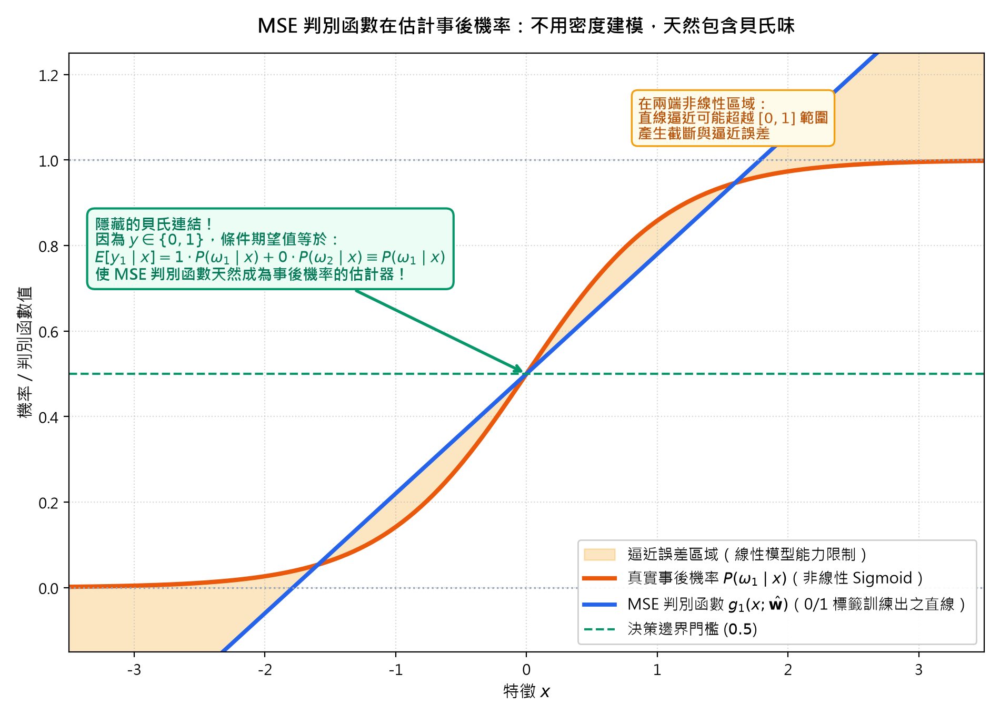
AI 生圖可用：重繪此示意圖的提示詞（結構化）
WHAT: A 2D comparison plot featuring a blue linear discriminant line g1(x) trained with 0/1 targets and an orange non-linear Sigmoid S-curve representing true posterior probability P(w1|x). The region between the line and the S-curve is filled with amber shading to represent approximation error. A callout box points to the intersection near (0, 0.5) highlighting the identity E[y1|x] = P(w1|x). WHY: To reveal the unexpected Bayesian connection: training a 0/1 target linear model under MSE naturally estimates class posterior probabilities without explicit density modeling, but introduces approximation errors when the true posterior is non-linear. MUST show: Linear discriminant line g1(x), non-linear S-curve P(w1|x), decision threshold line at 0.5, shaded approximation error region, and an annotation highlighting E[y1|x] = P(w1|x). AVOID: Making g1(x) perfectly overlap with P(w1|x), omitting the approximation error shading, or omitting probability bounds [0, 1]. STYLE: Educational infographic, clean vector lines, soft yellow error fill, crisp mathematical callout boxes.
一句話：本章開頭說要「擺脫」貝氏分類器，但這裡藏著一個漂亮的驚喜——只要用 $0/1$ 當期望輸出去訓練 MSE 判別函數，算出來的解其實正好就是各類別事後機率 $P(\omega_i\mid\boldsymbol{x})$ 的 MSE 估計值，完全不需要顯式建模任何機率密度！
推導脈絡：$M$ 類問題，判別函數 $g_i(\boldsymbol{x})$，期望輸出向量 $\boldsymbol{y}$ 除了正確類別位置是 1、其餘是 0。代價函數 $$ J=E\Big[\sum_{i=1}^M(g_i(\boldsymbol{x})-y_i)^2\Big] $$ 利用 $p(\boldsymbol{x},\omega_j)=P(\omega_j\mid\boldsymbol{x})p(\boldsymbol{x})$ 把期望值展開、整理（加減 $(E[y_i\mid\boldsymbol{x}])^2$ 這個技巧跟上一個知識點證明回歸最優性時如出一轍），最終拆成兩項： $$ J=E\Big[\sum_{i=1}^M\big(g_i(\boldsymbol{x})-E[y_i\mid\boldsymbol{x}]\big)^2\Big]+\big(\text{與 }g_i\text{ 無關的項}\big) $$ 第二項跟 $g_i$ 完全無關，最小化 $J$ 只需要讓第一項最小，也就是讓 $g_i(\boldsymbol{x})$ 盡量逼近 $E[y_i\mid\boldsymbol{x}]$。
關鍵一步：$y_i$ 的定義是「$\boldsymbol{x}\in\omega_i$ 時為 1，否則為 0」，所以 $$ E[y_i\mid\boldsymbol{x}]=1\cdot P(\omega_i\mid\boldsymbol{x})+0\cdot(1-P(\omega_i\mid\boldsymbol{x}))=P(\omega_i\mid\boldsymbol{x}) $$ 把這個代回去，結論是： $$ g_i(\boldsymbol{x};\hat{\boldsymbol{w}}_i) \text{ 是 } P(\omega_i\mid\boldsymbol{x}) \text{ 的 MSE 估計} $$
這件事重要在哪：用 $0/1$ 期望輸出、以 MSE 準則訓練判別函數，等價於在完全不做任何機率密度建模的情況下，直接估計出事後機率——這些估計值事後還可以拿去做貝氏分類！但天下沒有白吃的午餐：估計的好壞完全取決於採用的模型 $g_i(\cdot;\boldsymbol{w}_i)$ 夠不夠有彈性去逼近真正（通常是非線性的）$P(\omega_i\mid\boldsymbol{x})$。如果堅持用線性模型，而真正的事後機率函數高度非線性，逼近效果自然會很差——這也是第 4 章要引入非線性模型的動機之一。
用 0/1 當期望輸出、以 MSE 準則訓練出來的判別函數 $g_i(\boldsymbol{x};\hat{\boldsymbol{w}}_i)$，理論上估計的是什麼量？
偏誤-變異數困境：模型複雜度的兩難
▼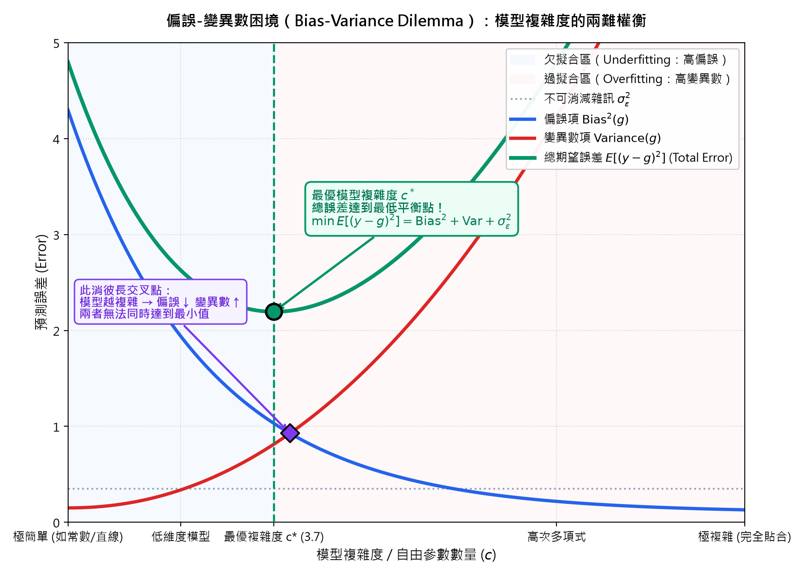
AI 生圖可用：重繪此示意圖的提示詞（結構化）
WHAT: A classic U-shaped Bias-Variance dilemma curve plot with Model Complexity on the horizontal axis and Error on the vertical axis. Three curves are shown: decreasing Bias^2 (blue curve), increasing Variance (red curve), and U-shaped Total Error (green curve). The minimum of Total Error is highlighted with a green dot and vertical dashed line at optimal complexity c*, while the crossover point between Bias^2 and Variance is marked with a purple diamond. WHY: To convey the fundamental trade-off in machine learning where increasing model complexity decreases bias but increases variance, requiring an optimal complexity balance point. MUST show: Bias^2 curve, Variance curve, Total Error U-curve, irreducible noise line, optimal complexity point c*, crossover point, and shaded Underfitting/Overfitting background zones. AVOID: Showing bias and variance both decreasing, omitting the U-shape of total error, or omitting the underfitting/overfitting region shading. STYLE: Classic machine learning textbook chart, clear color distinction, crisp annotations, soft background region shading.
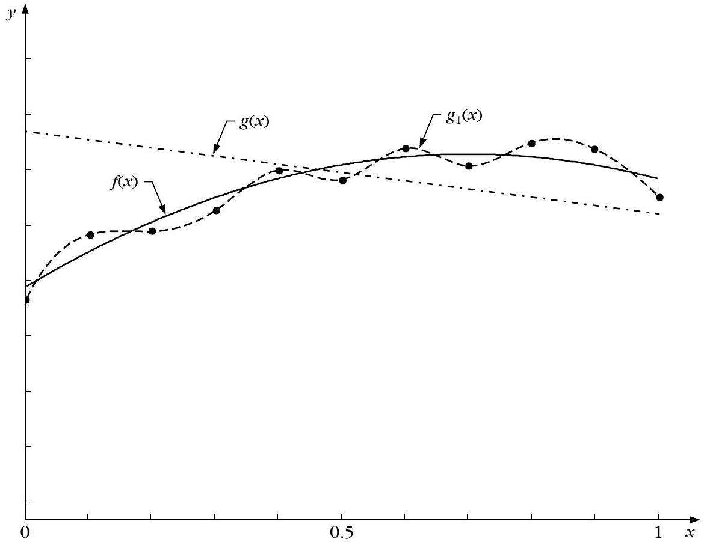
一句話：用有限的訓練資料集 $\mathcal{D}$ 估計出來的函數 $g(\boldsymbol{x};\mathcal{D})$，跟理論上最優的回歸函數 $E[y\mid\boldsymbol{x}]$ 之間的落差，可以拆成「偏誤」與「變異數」兩塊——模型越複雜，偏誤越小但變異數越大；越簡單則反過來，這個此消彼長的取捨叫偏誤-變異數困境（bias-variance dilemma）。
拆解推導：對所有可能大小為 $N$ 的訓練集 $\mathcal{D}$ 取平均，衡量估計函數的均方偏離： $$ E_{\mathcal{D}}\big[(g(\boldsymbol{x};\mathcal{D})-E[y\mid\boldsymbol{x}])^2\big] $$ 加減 $E_{\mathcal{D}}[g(\boldsymbol{x};\mathcal{D})]$ 這一項（跟前面兩個知識點同一招），可以拆成 $$ \underbrace{\big(E_{\mathcal{D}}[g(\boldsymbol{x};\mathcal{D})]-E[y\mid\boldsymbol{x}]\big)^2}_{\text{偏誤}^2}+\underbrace{E_{\mathcal{D}}\big[(g(\boldsymbol{x};\mathcal{D})-E_{\mathcal{D}}[g(\boldsymbol{x};\mathcal{D})])^2\big]}_{\text{變異數}} $$ 第一項是「就算換了不同的訓練集，估計值平均起來還是偏離真值多少」（偏誤）；第二項是「換不同訓練集，估計值本身的震盪有多大」（變異數）。即使一個估計是不偏的，若變異數很大，總誤差還是可能很高。
兩個極端情境對比：假設 $y=f(x)+\epsilon$（$\epsilon$ 零均值、變異數 $\sigma_\epsilon^2$）。
- 情境一（固定的簡單模型）：$g(x)=w_1x+w_0$，係數固定、不隨資料集變。此時 $E_{\mathcal{D}}[g(x;\mathcal{D})]=g(x)$ 是常數，變異數項恆為 0；但因為 $g(x)$ 是隨意選定的，一般會離真正的 $f(x)$ 有系統性落差，偏誤項通常很大。
- 情境二（極度複雜的模型）：$g_1(x)$ 是高次多項式，自由參數多到足以讓曲線精確穿過每一個訓練點。因為雜訊零均值，$E_{\mathcal{D}}[g_1(x;\mathcal{D})]=f(x)$，在訓練點上（進而在鄰近區域）偏誤趨近於 0；但代價是曲線會死板地追著每次抽樣的雜訊跑，變異數變成 $\sigma_\epsilon^2$——雜訊有多大，變異數就有多大。
啟示：偏誤與變異數不可能同時任意小，唯一能兩者皆低的途徑是讓訓練資料量 $N$ 趨近無窮大——但實務上 $N$ 永遠有限，設計者必須在複雜度與資料量之間找一個折衷點；若能取得額外的先驗知識（以約束條件的形式注入模型），往往可以同時壓低偏誤與變異數，因為這等於是「借用」了訓練資料以外的額外資訊。這個折衷在第 5 章會用更嚴謹、涵蓋分類誤差本身的框架重新討論。
這在做什麼
展示**偏誤-變異數困境（Bias-Variance Dilemma）**。固定真實目標函數 $f(x) = \sin(2\pi x)$ 與 $N=11$ 個訓練採樣點，透過蒙地卡羅模擬（$M=200$ 次獨立雜訊實現），即時計算當前多項式階數下擬合曲線的「偏誤²」、「變異數」與「總期望誤差」。
怎麼操作
- 拖動**「模型複雜度 / 多項式階數」**滑桿（1 到 9 階），觀察擬合曲線與誤差拆解變化。
- 調整**「雜訊標準差 $\sigma_\epsilon$」**滑桿，觀察雜訊大小對變異數的影響。
- 點擊「重新蒙地卡羅抽樣」按鈕刷新雜訊實現。
觀察什麼
- **往滑桿左邊拉（低階多項式）**：多項式擬合曲線極度穩定（變異數接近 0），但無法貼合 $\sin(2\pi x)$，產生很大的系統性**偏誤²**（欠擬合）。
- **往滑桿右邊拉（高階多項式）**：擬合曲線貼近訓練點，偏誤²下降，但 10 條半透明擬合曲線極度劇烈發散，**變異數**飆升（過擬合）。
- 觀察下方 U 形總誤差曲線在最佳平衡階數點（約 3~4 階）達到最小值。
理論基準與公式
總期望誤差拆解公式：
$$E_{\mathcal{D}}\big[(g(x;\mathcal{D}) - y)^2\big] = \underbrace{\big(E_{\mathcal{D}}[g(x)] - f(x)\big)^2}_{\text{偏誤}^2} + \underbrace{E_{\mathcal{D}}\big[(g(x) - E_{\mathcal{D}}[g(x)])^2\big]}_{\text{變異數}} + \sigma_\epsilon^2$$
在偏誤-變異數困境中，「一個固定不隨資料集改變、選得很隨意的簡單模型」通常會有什麼特徵？
邏輯斯迴歸：把事後機率比值的對數建模成線性函數
▼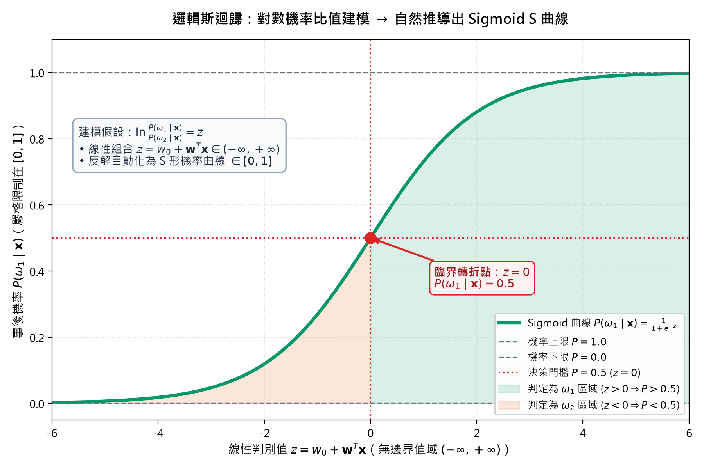
AI 生圖可用：重繪此示意圖的提示詞（結構化）
WHAT: A technical diagram illustrating Logistic Regression's Sigmoid probability curve. The horizontal axis represents the unbounded linear discriminant z = w0 + w^T x from -infinity to +infinity. The vertical axis represents the posterior probability P(w1|x) strictly bounded in [0, 1]. An S-shaped Sigmoid curve monotonically ascends from 0 at z << 0, passes through 0.5 at z = 0, and approaches 1 as z >> 0. WHY: To visually explain the causal transformation where modeling log-odds linearly (z) naturally and automatically yields a smooth S-curve bounded between 0 and 1, solving the range mismatch between unbounded linear functions and valid probability values. MUST show: 1. The smooth Sigmoid curve P(w1|x) = 1/(1+exp(-z)). 2. Horizontal asymptote lines at P=1.0 and P=0.0. 3. Decision threshold at z=0 where P(w1|x) = 0.5, partitioning space into Class w2 (z<0) and Class w1 (z>0). 4. Formula annotations showing the mapping from linear z to probability P. AVOID: Unconnected discrete boxes, generic neural network node diagrams, or arbitrary non-logistic curves. STYLE: Clean academic technical style, vector look, emerald green (#059669) accent color with subtle grey grid lines and crisp typography.
一句話：邏輯斯判別（logistic discrimination）走了另一條路——不直接建模事後機率本身，而是把「事後機率比值取對數」這個量，直接假設成 $\boldsymbol{x}$ 的線性函數，反推回去恰好得到一組漂亮的指數型（sigmoid 家族）事後機率公式。
建模假設： $$ \ln\frac{P(\omega_i\mid\boldsymbol{x})}{P(\omega_M\mid\boldsymbol{x})}=w_{i,0}+\boldsymbol{w}_i^T\boldsymbol{x},\qquad i=1,\ldots,M-1 $$ （分母選哪一類當「參考類別」都可以，這裡選 $\omega_M$）。搭配所有事後機率加總為 1 的約束，反解出： $$ P(\omega_M\mid\boldsymbol{x})=\frac{1}{1+\sum_{i=1}^{M-1}\exp(w_{i,0}+\boldsymbol{w}_i^T\boldsymbol{x})},\qquad P(\omega_i\mid\boldsymbol{x})=\frac{\exp(w_{i,0}+\boldsymbol{w}_i^T\boldsymbol{x})}{1+\sum_{i=1}^{M-1}\exp(w_{i,0}+\boldsymbol{w}_i^T\boldsymbol{x})} $$ 兩類的特例化簡成大家熟悉的 sigmoid 形式： $$ P(\omega_2\mid\boldsymbol{x})=\frac{1}{1+\exp(w_0+\boldsymbol{w}^T\boldsymbol{x})},\qquad P(\omega_1\mid\boldsymbol{x})=\frac{\exp(w_0+\boldsymbol{w}^T\boldsymbol{x})}{1+\exp(w_0+\boldsymbol{w}^T\boldsymbol{x})} $$
參數估計：最大似然：把所有待估參數收進 $\boldsymbol{\theta}$，訓練樣本依類別分組，log-likelihood 整理後（跟前一章的 ML 手法一致）化簡成 $$ L(\boldsymbol{\theta})=\sum_{k=1}^{N_1}\ln P(\omega_1\mid\boldsymbol{x}_k^{(1)})+\cdots+\sum_{k=1}^{N_M}\ln P(\omega_M\mid\boldsymbol{x}_k^{(M)})+C $$ $C$ 是跟 $\boldsymbol{\theta}$ 無關的常數，代入前面兩式後用一般的最佳化方法求解即可。
跟 LDA 的微妙關係：在高斯、等共變異數的假設下，可以證明貝氏規則的事後機率比值對數，剛好也是 $\boldsymbol{x}$ 的線性函數： $$ \ln\frac{P(\omega_1\mid\boldsymbol{x})}{P(\omega_2\mid\boldsymbol{x})}=\frac{1}{2}(\boldsymbol{\mu}_2^T\Sigma^{-1}\boldsymbol{\mu}_2-\boldsymbol{\mu}_1^T\Sigma^{-1}\boldsymbol{\mu}_1)+(\boldsymbol{\mu}_1-\boldsymbol{\mu}_2)^T\Sigma^{-1}\boldsymbol{x}\equiv w_0+\boldsymbol{w}^T\boldsymbol{x} $$ 形式上跟邏輯斯判別完全一樣！但兩者估計參數的方式不同：LDA 假設高斯分布、透過完整的似然函數（隱含邊際密度 $p(\boldsymbol{x}_k)$）估計；邏輯斯判別的邊際密度只進入常數項 $C$、完全不影響解。所以：若高斯假設合理，LDA 用上了更多資訊，是自然的選擇；若不合理，邏輯斯判別因為假設更少，往往更穩健。實務上兩者的表現常常相差不大。
這在做什麼
展示**邏輯斯迴歸（Logistic Discrimination）**如何透過將「事後機率比值的對數」建模為線性函數 $z = w_0 + w x$，自動反推出滑順的 Sigmoid S 形機率曲線 $P(\omega_1 \mid x) = \frac{1}{1 + e^{-(w_0 + w x)}}$。
怎麼操作
- 拖動 **$w_0$ 截距滑桿**（改變曲線左右平移）與 **$w$ 斜率滑桿**（改變曲線傾斜陡峭度及方向）。
- 即時觀察曲線、藍色臨界點（$P=0.5$ 門檻）、以及背景預測分區。
- 點擊「重置預設值」還原為 $w_0=0.0, w=1.5$。
觀察什麼
- **範圍自動約束**：不管 $w_0$ 與 $w$ 調得有多極端，機率 $P(\omega_1 \mid x)$ 恆嚴格限制在 $(0, 1)$ 開區間內，解決了線性模型值域 $(-\infty, +\infty)$ 與機率限制的矛盾。
- **決策門檻**：綠色虛線 $P=0.5$ 對應的點恰好是 $x_{\text{threshold}} = -w_0 / w$。
- **方向翻轉**：當 $w > 0$ 時，曲線向右遞增；當 $w < 0$ 時，曲線向右遞減；當 $w = 0$ 時，全空間機率恆定為 $\frac{1}{1 + e^{-w_0}}$。
理論基準與公式
對數事後機率比值建模與 Sigmoid 反解：
$$\ln\frac{P(\omega_1\mid x)}{P(\omega_2\mid x)} = w_0 + w x \implies P(\omega_1\mid x) = \frac{1}{1 + \exp(-(w_0 + w x))}$$
決策邊界門檻點（$P=0.5$ 處）：
$$w_0 + w x = 0 \implies x_{\text{threshold}} = -\frac{w_0}{w}$$
邏輯斯判別跟 LDA（線性判別分析）在高斯、等共變異數假設下，兩者算出的判別函數形式有什麼關係？
支持向量機（一）：線性可分情況下的最大間隔超平面
▼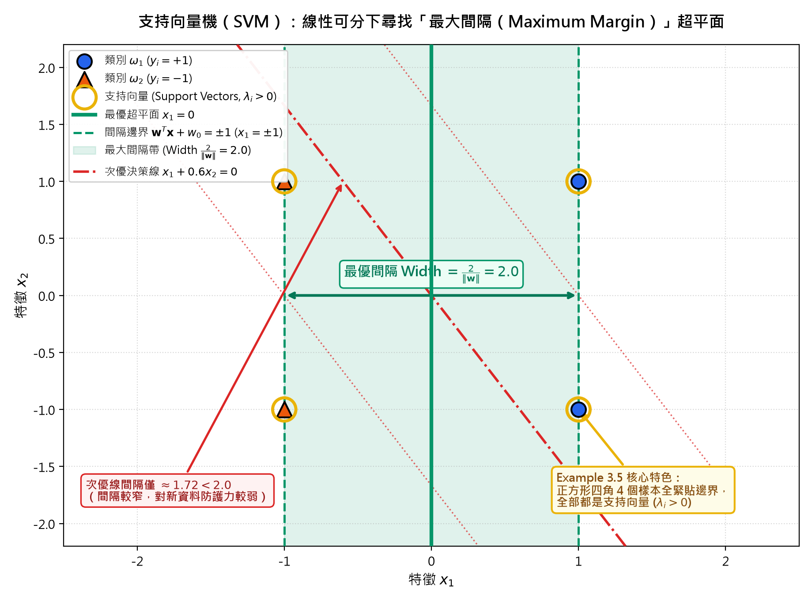
AI 生圖可用：重繪此示意圖的提示詞（結構化）
WHAT: A geometric diagram illustrating Support Vector Machines (SVM) Maximum Margin Principle using Example 3.5. Four data points form a square at (1,1), (1,-1) for Class w1 and (-1,1), (-1,-1) for Class w2. The optimal decision hyperplane is x1=0, flanked by parallel margin lines at x1=1 and x1=-1, creating a shaded margin zone of width 2. All 4 points sit directly on the margin boundaries as Support Vectors. A candidate sub-optimal line with a narrower margin is overlaid for contrast. WHY: To demonstrate that SVM selects the unique decision boundary that maximizes the margin (2/||w||) between classes, rather than settling for any arbitrary separating hyperplane. MUST show: 1. The optimal separating hyperplane x1=0 (solid emerald line). 2. Margin boundary lines x1=1 and x1=-1 (dashed lines) with shaded maximum margin band of width 2. 3. All 4 corner points highlighted as Support Vectors. 4. A suboptimal candidate separating hyperplane showing a visibly narrower margin for direct visual contrast. AVOID: Arbitrary unaligned points, missing margin lines, or generic flowchart boxes. STYLE: Clean technical geometry style, vector art, emerald green accent (#059669), clear labels with mathematical text.
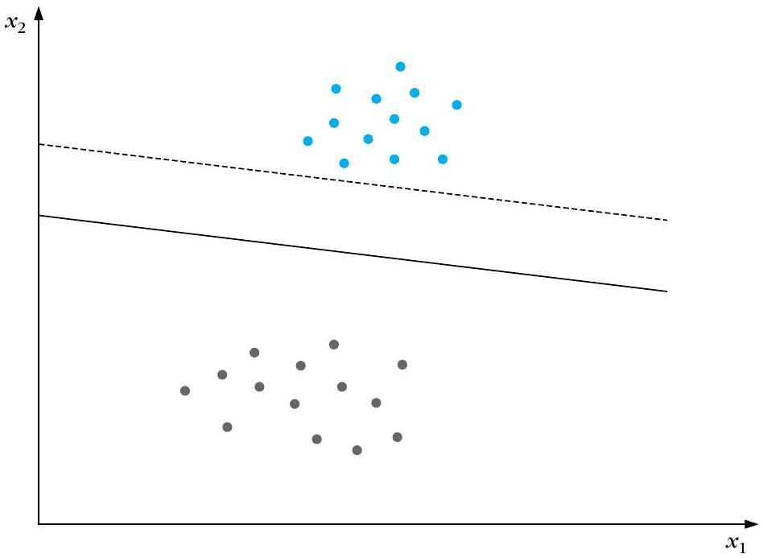
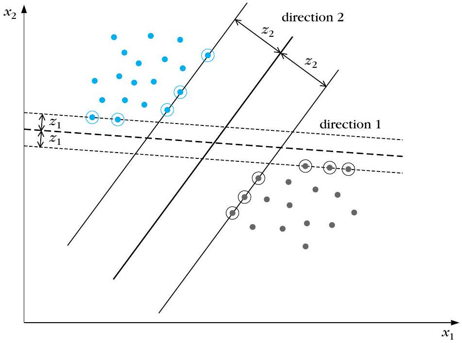
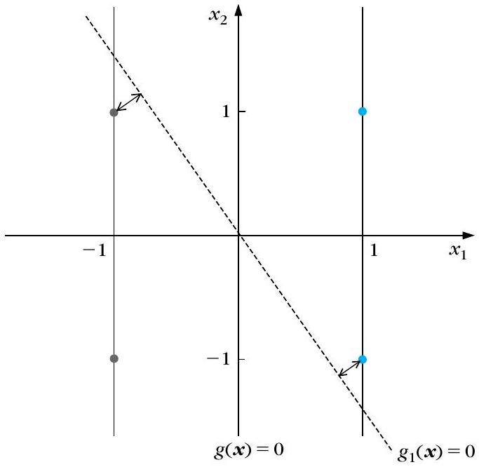
一句話：感知器演算法只求「隨便一個能分開兩類的超平面」，SVM 更講究——在所有能分開兩類的超平面中，挑出離兩類「最遠」的那一個，讓分類器面對訓練集以外的新資料時更有把握，這個「留最大空間」的想法就是最大間隔（maximum margin）原則。
間隔的量化：先把超平面縮放，使得兩類離超平面最近的點代入 $g(\boldsymbol{x})$ 剛好等於 $+1$（$\omega_1$）與 $-1$（$\omega_2$）： $$ \boldsymbol{w}^T\boldsymbol{x}+w_0\ge1,\ \forall\boldsymbol{x}\in\omega_1;\qquad \boldsymbol{w}^T\boldsymbol{x}+w_0\le-1,\ \forall\boldsymbol{x}\in\omega_2 $$ 這樣一來，兩類之間的間隔（margin）恰好是 $\frac{2}{\|\boldsymbol{w}\|}$——間隔越大，$\|\boldsymbol{w}\|$ 就要越小。
最佳化問題：令 $y_i=+1(\omega_1)$ 或 $-1(\omega_2)$，任務變成 $$ \min_{\boldsymbol{w},w_0}\ \tfrac12\|\boldsymbol{w}\|^2 \quad\text{subject to}\quad y_i(\boldsymbol{w}^T\boldsymbol{x}_i+w_0)\ge1,\ i=1,\ldots,N $$ 這是一個凸二次規劃問題（目標函數凸、限制式線性），保證任何局部最小值都是全域唯一最小值——SVM 的最優超平面是唯一的。用 KKT 條件搭配 Lagrange 乘子 $\lambda_i$，可解出 $$ \boldsymbol{w}=\sum_{i=1}^N\lambda_iy_i\boldsymbol{x}_i,\qquad \sum_{i=1}^N\lambda_iy_i=0 $$
支持向量：$\lambda_i$ 只能是 0 或正值，$\boldsymbol{w}$ 其實只是那些 $\lambda_i\ne0$ 的樣本的線性組合——這些樣本剛好就落在邊界上（$\boldsymbol{w}^T\boldsymbol{x}+w_0=\pm1$），叫做支持向量（support vectors），是訓練集裡真正「撐起」分類邊界的關鍵點；其餘 $\lambda_i=0$ 的樣本，不管落在間隔外側任何位置，對分類器完全沒有影響。
Wolfe 對偶形式：等價的對偶問題只涉及 $\lambda_i$： $$ \max_{\boldsymbol{\lambda}}\Big(\sum_i\lambda_i-\tfrac12\sum_{i,j}\lambda_i\lambda_jy_iy_j\boldsymbol{x}_i^T\boldsymbol{x}_j\Big)\quad\text{s.t.}\quad\sum_i\lambda_iy_i=0,\ \boldsymbol{\lambda}\ge\mathbf{0} $$ 特別值得注意：訓練向量只以「內積」的形式 $\boldsymbol{x}_i^T\boldsymbol{x}_j$ 成對出現，代價函數不顯式依賴輸入空間的維度——這個特性是後面「核技巧」把 SVM 推廣到非線性分類的關鍵伏筆。
數值範例（Example 3.5）：$\omega_1:[1,1]^T,[1,-1]^T$；$\omega_2:[-1,1]^T,[-1,-1]^T$，四點恰好落在正方形四個角。憑幾何直覺就能看出最優分界線是 $x_1=0$（即 $w_1=1,w_2=0,w_0=0$），margin 剛好等於 1，四個點全部都是支持向量。有趣的是，求解對應的 KKT 方程組（$\lambda_1+\lambda_2+\lambda_3+\lambda_4=1$、$\lambda_1+\lambda_4-\lambda_2-\lambda_3=0$、$\lambda_1+\lambda_2-\lambda_3-\lambda_4=0$）會發現這組方程有不只一組解——Lagrange 乘子本身不一定唯一，但它們算出來的最終超平面永遠是同一個、唯一的。
這在做什麼
展示**硬間隔支持向量機（Hard-Margin SVM）**如何透過投影梯度上升演算法求解對偶問題 $\lambda_i$，尋找離兩類點都最遠的「最大間隔超平面（Maximum Margin Hyperplane）」。初始點包含 Example 3.5 的正方形四點及其餘可分點。
怎麼操作
- 在畫布上用滑鼠或觸控**拖曳任意數據點**（藍色圓圈為 $\omega_1, y=+1$；橘色三角形為 $\omega_2, y=-1$），系統會即時重新求解超平面。
- 點擊「重置預設點 (8點)」或「僅載入 Example 3.4/3.5 正方形四點」測試不同情境。
觀察什麼
- **支持向量（Support Vectors）**：只有貼在間隔邊界上（$\lambda_i > 0$）的點會被標上**黃金光暈外框**，全場超平面完全由這些支持向量「撐起」。
- **對偶獨立性**：試著拖動非支持向量（位於間隔帶外側的點）往更遠處拉，會發現**超平面與間隔寬度完全不變**！
- **不可分防呆**：當兩類點混雜導致線性不可分時，系統會自動提示並標示無法滿足硬限制。
理論基準與公式
對偶問題最大化標量：
$$\max_{\boldsymbol{\lambda}} \left[ \sum_{i=1}^N \lambda_i - \frac{1}{2}\sum_{i=1}^N\sum_{j=1}^N \lambda_i \lambda_j y_i y_j (\mathbf{x}_i \cdot \mathbf{x}_j) \right] \quad \text{s.t. } \sum_{i=1}^N \lambda_i y_i = 0, \ \lambda_i \ge 0$$
權重向量與最優間隔寬度：
$$\mathbf{w} = \sum_{i=1}^N \lambda_i y_i \mathbf{x}_i, \qquad \text{Margin Width} = \frac{2}{\|\mathbf{w}\|}$$
SVM 的最優超平面（線性可分情況）是由哪些訓練樣本決定的？
支持向量機（二）：不可分情況下的軟間隔與參數 C
▼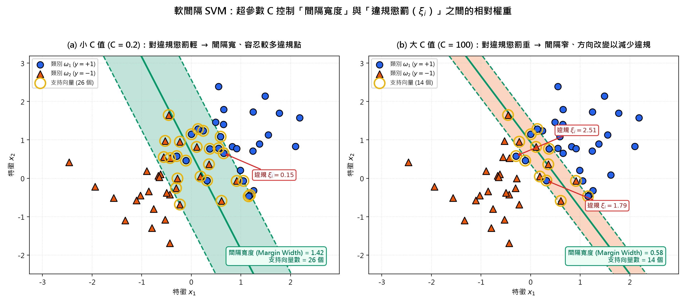
AI 生圖可用：重繪此示意圖的提示詞（結構化）
WHAT: A side-by-side comparison diagram illustrating Soft-Margin Support Vector Machines (SVM) under different C hyperparameters (Example 3.6). Both subplots display the identical non-separable 2D dataset with overlapping class distributions. The left subplot shows Small C (C=0.2), resulting in a wide margin band that tolerates several points inside the margin. The right subplot shows Large C (C=100), resulting in a rotated, narrow margin band that strictly punishes margin violations. WHY: To reveal the key trade-off mechanism where hyperparameter C controls the balance between maximizing margin width and penalizing slack violations (xi_i), showing how the exact same data produces drastically different decision boundaries depending on C. MUST show: 1. Identical overlapping 2D dataset in both subplots. 2. Left panel: Wide margin band for C=0.2 with labeled slack variables (0 < xi_i <= 1 and xi_i > 1). 3. Right panel: Narrow, adjusted margin band for C=100 with fewer margin violations. 4. Clear visual markers distinguishing the 3 point types: outside margin (xi=0), inside margin (0<xi<=1), and misclassified (xi>1). AVOID: Using different dataset points between panels, missing slack variable labels, or abstract un-quantified shapes. STYLE: Clean academic data visualization style, two-panel layout, emerald green vs coral orange contrast, crisp mathematical text and legend.
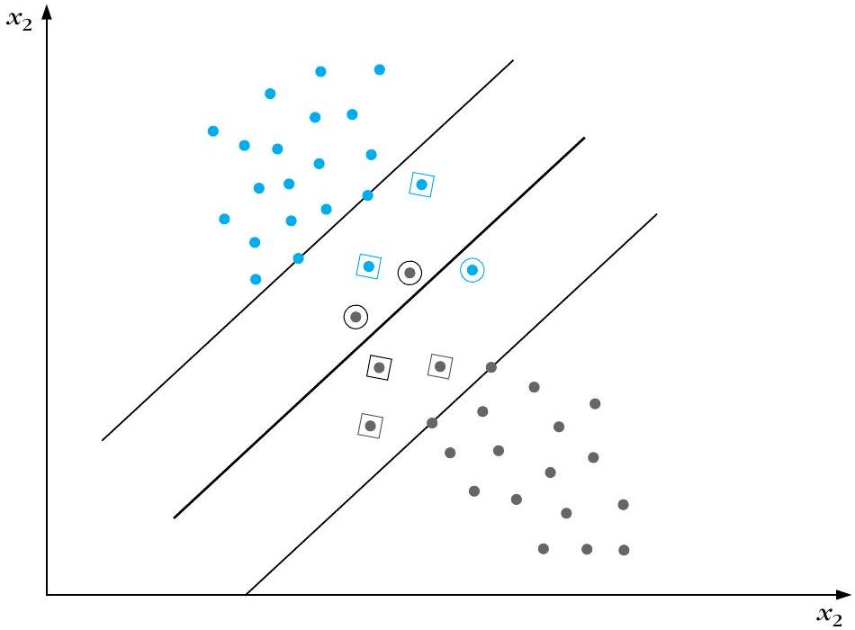
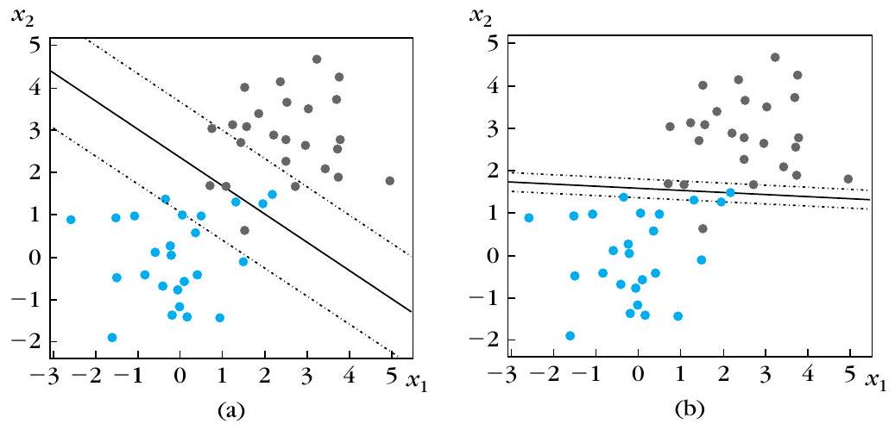
一句話：真實資料通常無法被一條超平面完全分開——SVM 引入「鬆弛變數」讓少數點可以違規待在間隔帶內甚至分錯，用參數 $C$ 權衡「間隔要多大」與「容忍多少違規」，這種放寬版本叫軟間隔（soft margin）SVM。
三種樣本、一組鬆弛變數：不可分時，訓練樣本落入三種情況——完全正確且在間隔外（滿足原本的硬限制）、正確但落在間隔帶內（$0\le y_i(\boldsymbol{w}^T\boldsymbol{x}+w_0)\lt 1$）、以及徹底分類錯誤（$y_i(\boldsymbol{w}^T\boldsymbol{x}+w_0)\lt 0$）。引入鬆弛變數 $\xi_i\ge0$ 把三種情況統一成一組限制式： $$ y_i[\boldsymbol{w}^T\boldsymbol{x}_i+w_0]\ge1-\xi_i $$ $\xi_i=0$ 對應第一種（完全沒違規）、$0\lt \xi_i\le1$ 對應第二種（違規但仍分對）、$\xi_i\gt 1$ 對應第三種（分錯）。
軟間隔代價函數： $$ \min_{\boldsymbol{w},w_0,\boldsymbol{\xi}}\ \tfrac12\|\boldsymbol{w}\|^2+C\sum_{i=1}^N\xi_i \quad\text{s.t.}\quad y_i[\boldsymbol{w}^T\boldsymbol{x}_i+w_0]\ge1-\xi_i,\ \xi_i\ge0 $$ $C$ 是一個正的常數，控制「間隔要多寬」跟「違規要罰多重」這兩件互相競爭的事之間的相對權重。求解後對偶問題的形式跟可分情況幾乎一樣，唯一差別是 Lagrange 乘子多了一個上界： $$ \max_{\boldsymbol{\lambda}}\Big(\sum_i\lambda_i-\tfrac12\sum_{i,j}\lambda_i\lambda_jy_iy_j\boldsymbol{x}_i^T\boldsymbol{x}_j\Big)\quad\text{s.t.}\quad0\le\lambda_i\le C,\ \sum_i\lambda_iy_i=0 $$ 可分情況正是 $C\to\infty$ 的極限特例。落在間隔帶內或分錯的點（$\xi_i\gt 0$）對應的 $\lambda_i$ 一定會被「頂到」上界 $C$——它們在最終解裡佔的份量是所有樣本中最大的。
$C$ 的直覺與 Example 3.6：$C$ 越大，違規的懲罰越重，最佳化過程會傾向縮小間隔以減少落入帶內的點數；$C$ 越小，容忍度越高，間隔可以放得更寬。書中範例用 Platt 演算法對同一組不可分資料分別取 $C=0.2$ 與 $C=1000$：$C=1000$ 時分類器的方向、位置、間隔寬度都改變了，目標是讓落在間隔內的點盡量少——這正是「軟間隔」名稱的由來：間隔的寬度不再單純由資料分布決定，而是被 $C$ 這個超參數大幅左右。
這在做什麼
展示**軟間隔支持向量機（Soft-Margin SVM）**如何透過懲罰參數 $C$ 與鬆弛變數 $\xi_i \ge 0$，平衡「追求最大間隔」與「懲罰違規點」兩個競爭目標。初始數據包含 Example 3.6 風格的重疊不可分數據點。
怎麼操作
- 拖動 **懲罰參數 $C$ 滑桿**（對數尺度 $0.01 \sim 100$），即時觀察間隔寬度與超平面方向的改變。
- 在畫布上**拖曳任意數據點**，即時觀測鬆弛變數 $\xi_i$ 與違規懲罰值的連動。
- 點擊「重置 Example 3.6 重疊數據」還原預設點。
觀察什麼
- **小 $C$ 值（如 $C = 0.01$）**：對違規懲罰輕，演算法優先追求**極寬的間隔**，允許較多點落在間隔帶內或分類錯誤。
- **大 $C$ 值（如 $C = 100$）**：對違規懲罰極重，演算法被迫**縮減間隔寬度**並旋轉超平面，極力減少違規點。
- 違規點（$\xi_i > 0$）的對偶變數 $\lambda_i$ 會被硬性限制在上界 $C$ 上（即 $\lambda_i = C$）。
理論基準與公式
帶有 $C$ 上界的軟間隔對偶問題：
$$\max_{\boldsymbol{\lambda}} \left[ \sum_{i=1}^N \lambda_i - \frac{1}{2}\sum_{i=1}^N\sum_{j=1}^N \lambda_i \lambda_j y_i y_j (\mathbf{x}_i \cdot \mathbf{x}_j) \right] \quad \text{s.t. } \sum_{i=1}^N \lambda_i y_i = 0, \ 0 \le \lambda_i \le C$$
鬆弛變數與總代價函數：
$$\xi_i = \max(0, 1 - y_i(\mathbf{w}^T \mathbf{x}_i + w_0)), \qquad \text{Cost} = \frac{1}{2}\|\mathbf{w}\|^2 + C \sum_{i=1}^N \xi_i$$
在軟間隔 SVM 中，如果把懲罰參數 $C$ 調得非常大，會發生什麼傾向？
SVM 的多類別擴充：一對多、一對一、糾錯編碼
▼AI 生圖可用：重繪此示意圖的提示詞（結構化）
WHAT: Draw a wide SVG infographic with three panels. Top-left panel (a) shows a 2D scatter of three classes (green circles, blue triangles, orange squares) with three dashed green boundary lines (g1, g2, g3) each separating one class from the rest; between g1 and g2 above g3 there is a red hatched "uncertainty region" where multiple classifiers are simultaneously positive. Top-right panel (b) shows the same three classes with three solid green boundary lines forming a clean T-shaped partition with no overlap — each region has a clear majority. Bottom panel (c) full width shows a 4×6 codeword matrix of +1/−1 cells (green for +1, gray for −1), a fifth "received" row with one cell flipped to red (marked with ✕), and four horizontal Hamming-distance bars to the right where the bar for ω1 is shortest (d=1, green, winner) despite the error, while ω2/ω3/ω4 are longer (d=3,3,5, gray). A red dashed arrow curves from the error cell to the winning bar. A green-tinted annotation box on the far right states "redundancy → fault tolerance: d=3, tolerates 1 error". WHY: The causal chain is: using more bits than strictly needed (6 bits for 4 classes when 2 would suffice) creates redundancy, and that redundancy enables error correction — even if one classifier is wrong, the closest codeword is still the correct class. The counter-intuitive turn is that error-correcting coding looks like it just complicates the problem (more classifiers to train), but this very complication is what buys fault tolerance. Panels (a) and (b) show the simpler strategies' weaknesses (imbalance + uncertainty regions for one-against-all; quadratic classifier count for one-against-one) to motivate why (c) exists. MUST show: - Three visibly different partition strategies on the same class layout. - A red hatched overlap zone in panel (a) that is absent in panel (b). - A codeword matrix with one red error cell in the received row. - Hamming distance bars where the shortest bar (winner) is green and corresponds to the class whose codeword was corrupted — the error did not change the outcome. - A curved arrow from the error to the winner, making "error survived" geometric. - An annotation box explicitly stating "redundancy → fault tolerance". - Even with all text masked: red overlap in (a), clean partition in (b), one red cell + shortest green bar in (c) — the story reads from geometry. AVOID: Do not draw three noun-boxes connected by arrows. Do not make the codeword matrix a plain table with no error cell. Do not omit the Hamming distance bars — without them the "closest codeword wins" mechanism is invisible. Do not make panels (a) and (b) identical — the uncertainty region must be the visible difference. Do not use external images or fonts. STYLE: Clean offline SVG scientific infographic, logical viewBox coordinates, white and light-gray background, #059669 green accent with grayscale, crisp arrows, semantic groups, textbook-level clarity.
一句話：SVM 天生是為兩類問題設計的，要處理 $M$ 類問題，最直接的做法是把它拆解成一堆兩類子問題，常見有三種拆法：一對多、一對一、以及借用通訊糾錯碼概念的糾錯編碼法。
一對多（one-against-all）：對每個類別 $\omega_i$ 各訓練一個判別函數 $g_i(\boldsymbol{x})$，把 $\omega_i$ 當正類、其餘全部當負類，讓 $g_i(\boldsymbol{x})=0$ 是分開 $\omega_i$ 跟「其他所有類」的最優超平面。分類規則： $$ \boldsymbol{x}\in\omega_i \quad\text{若}\quad i=\arg\max_k\{g_k(\boldsymbol{x})\} $$ 缺點：可能出現「不確定區域」——不只一個 $g_i(\boldsymbol{x})$ 同時為正；而且每個二元分類器面對的是「1 類 vs. 其餘全部」，正負樣本數天生極度不平衡，類別數越多這個問題越嚴重。
一對一（one-against-one）：訓練 $M(M-1)/2$ 個二元分類器，每個只負責分開一對類別，最終用多數投票決定。缺點是分類器數量隨類別數平方成長，訓練負擔較重。
糾錯編碼（error-correcting coding）：借用通訊系統的糾錯編碼概念——設計 $L$ 個二元分類器，每個類別對應一個長度 $L$ 的二元碼字（$+1/-1$ 組成），例如 $M=4,L=6$ 時可以是一個 $4\times6$ 的碼字矩陣。訓練時，第 $i$ 個分類器依照矩陣第 $i$ 欄的標籤把類別分成兩群訓練。分類新樣本時，把 $L$ 個分類器的輸出串成一個碼字，跟 $M$ 個已知碼字逐一比較 Hamming 距離（兩碼字不同位置的個數），取距離最小者。這個方法的威力所在：只要任兩個碼字之間的最小 Hamming 距離是 $d$，即使 $L$ 個分類器裡最多有 $\lfloor\frac{d-1}{2}\rfloor$ 個判斷錯誤，最終還是能得到正確分類——編碼本身自帶容錯能力，這正是「糾錯」兩個字的來源。
取捨與延伸：前兩種方法可套用在任何分類器上；糾錯編碼是最有彈性、容錯性最好的做法，但需要設計者事先規劃好有意義的分組（例如數字辨識中依「有無水平線」「有無垂直線」分組）。另外也存在專門針對 SVM 直接推廣到多類別數學形式的方法，只是計算量通常更大。
糾錯編碼法（error-correcting coding）處理多類別問題時，容錯能力的關鍵來自哪裡？
ν-SVM：讓間隔寬度直接成為可控制的變數
▼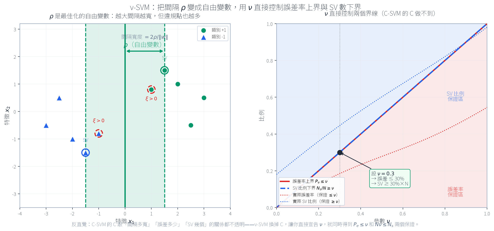
AI 生圖可用：重繪此示意圖的提示詞（結構化）
WHAT: Draw a two-panel matplotlib figure. Left panel: a 2-D scatter of two classes (green circles for +1, blue triangles for -1) separated by a vertical green line (the boundary w^T x + w0 = 0), flanked by two dashed green vertical lines at x = +rho and x = -rho forming a margin band (light green tint). Two points sit exactly on the margin lines (circled, labeled SV); two points penetrate into the margin band (red dashed circles, labeled xi > 0). A double-headed green arrow spans from the boundary to +rho, labeled "rho (free variable)". Right panel: a plot with nu on the x-axis (0 to 1) and fraction on the y-axis (0 to 1). The diagonal y = nu divides the plot into two shaded zones: a red tinted zone below (error rate guaranteed zone) and a blue tinted zone above (SV fraction guaranteed zone). A red solid line (y = nu, error upper bound) and a blue dashed line (y = nu, SV lower bound) run along the diagonal. Two dotted sample curves stay inside their zones: red dotted below the line (actual error), blue dotted above the line (actual SV fraction). A vertical dotted line marks nu = 0.3 with an annotation "set nu=0.3 -> error <= 30%, SV >= 30% x N". WHY: The causal chain is: making rho a free variable in the optimization lets the margin width be determined by the data, and the parameter nu directly controls two guaranteed bounds — error rate P_err <= nu and support-vector count N_s >= N*nu. The counter-intuitive turn is that the original C parameter is opaque: the same C gives different margins, error rates, and SV counts on different datasets, and you only find out after solving the QP. nu-SVM replaces this opaque C with a directly interpretable nu: you declare nu and immediately know the worst-case error rate and minimum SV count before solving anything. MUST show: - The margin band with rho as a labeled free variable, not a fixed constant. - Support vectors on the margin and violators inside it (xi > 0), so the tradeoff "larger rho = wider margin but more violations" is visible. - The y = nu diagonal dividing the right panel into two guaranteed zones. - Sample actual curves that stay inside the zones (error below, SV above). - A concrete nu value marked with its two immediate consequences. - Even with text masked: the margin band + circled SVs + red violators on the left, and the diagonal-split shaded zones with curves staying inside on the right — the "directly controllable bounds" story reads from geometry. AVOID: Do not draw rho as a fixed number without showing it as a variable. Do not omit the violator points — without them the "larger rho = more violations" tradeoff is invisible. Do not make the right panel a single line without shaded zones — the two guaranteed zones are the whole point. Do not use external images or non-Chinese fonts for Chinese labels. STYLE: Clean offline matplotlib PNG, white background, Noto Sans TC registered by file path for Chinese, DejaVu Sans for math, #059669 green accent with grayscale, restrained typography, textbook-level clarity, 180 dpi.
一句話：軟間隔 SVM 用參數 $C$ 控制違規容忍度，但 $C$ 跟「最終間隔會變多寬」的關係並不直觀——ν-SVM 換了一種參數化方式，直接把間隔寬度 $\rho$ 變成最佳化過程裡的自由變數，讓設計者透過 $\nu\in[0,1]$ 更直接地掌握誤差率與支持向量數量的上下界。
新的間隔定義：邊界超平面改寫成 $\boldsymbol{w}^T\boldsymbol{x}+w_0=\pm\rho$，$\rho\ge0$ 本身也要被最佳化。原本的軟間隔問題重新表述為 $$ \min_{\boldsymbol{w},w_0,\boldsymbol{\xi},\rho}\ \tfrac12\|\boldsymbol{w}\|^2-\nu\rho+\frac{1}{N}\sum_{i=1}^N\xi_i \quad\text{s.t.}\quad y_i[\boldsymbol{w}^T\boldsymbol{x}_i+w_0]\ge\rho-\xi_i,\ \xi_i\ge0,\ \rho\ge0 $$ $\xi_i=0$ 時間隔正是 $\frac{2\rho}{\|\boldsymbol{w}\|}$；$\rho$ 越大，間隔越寬、落入間隔內的點也可能越多。求解後對偶問題變成 $$ \max_{\boldsymbol{\lambda}}\Big(-\tfrac12\sum_{i,j}\lambda_i\lambda_jy_iy_j\boldsymbol{x}_i^T\boldsymbol{x}_j\Big)\quad\text{s.t.}\quad0\le\lambda_i\le\frac1N,\ \sum_i\lambda_iy_i=0,\ \sum_i\lambda_i\ge\nu $$
$\nu$ 的兩個保證上下界：透過 KKT 條件可以證明兩個很實用的界線： $$ \text{訓練集誤差率 } P_e\le\nu,\qquad N\nu\le N_s\ (\text{支持向量數}) $$ 換句話說，設計者調 $\nu$，同時就等於在「宣告」訓練誤差率的上限，以及支持向量數量的下限——$\nu$ 越大，允許的誤差率上限越高，但也保證了越多的支持向量（可能拖慢測試階段運算）。這比原本的 $C$ 直觀得多，因為 $C$ 跟這兩件事的關係並不透明。
跟原本 $C$-SVM 的關係：可以證明對適當選取的 $C$、$\nu$，兩種公式會得到完全相同的解——ν-SVM 不是一個全新的方法，只是同一個最佳化問題的另一種參數化。ν 必須落在某個 $[\nu_{\min},\nu_{\max}]$ 範圍內才能保證問題有解。多出來的優勢是：後面會看到 ν-SVM 有一個非常直觀的幾何解讀（下個知識點）。
操作說明與正確結果基準
- 這在做什麼：固定一批不可分的 2D 訓練點（兩類凸包相交）。調 $\nu$ 滑桿，畫面用 $\mu=\frac{2}{\nu N}$ 換算出縮減凸包參數，即時求解最近點與超平面，並顯示支持向量數與誤差率。
- 怎麼操作：拖動 $\nu$ 滑桿（$0.05$ 到 $\nu_{\max}=2N_{\min}/N$）。$\nu$ 小 → $\mu$ 大 → 幾乎不縮 → 間隔可能為 0；$\nu$ 大 → $\mu$ 小 → 縮減凸包分離 → 間隔變正。
- 觀察什麼：$\nu$ 越大，間隔越寬、支持向量越多。同時核對兩個理論保證：$P_e \le \nu$（誤差率上界）和 $N\nu \le N_s$（支持向量數下界）是否成立。
- 正確結果基準：$\mu=\frac{2}{\nu N}$，$P_e \le \nu$，$N\nu \le N_s$。這兩個保證由 KKT 條件嚴格證明，不論資料長相都成立。
與縮減凸包的對應：$\mu = \dfrac{2}{\nu N}$——$\nu$ 越大 $\mu$ 越小，凸包縮越多，間隔越寬。
$C$-SVM 的 $C$ 跟這兩件事的關係不透明；$\nu$ 直接告訴你「誤差最多多少」「SV 至少幾個」。
在 ν-SVM 中，參數 $\nu$ 直接給出了哪兩件事的理論上下界？
SVM 的幾何觀點：尋找兩個凸包之間最近的點
▼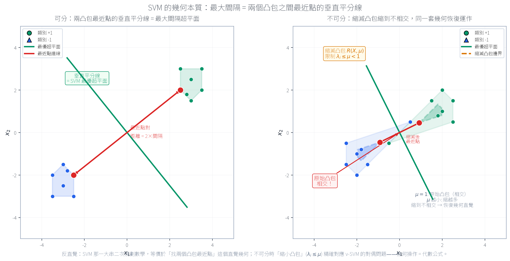
AI 生圖可用：重繪此示意圖的提示詞（結構化）
WHAT: Draw a two-panel matplotlib figure. Left panel (separable case): two non-overlapping convex hulls — a green-tinted polygon (class +1, circles) on the right and a blue-tinted polygon (class -1, triangles) on the left. A red line segment connects the closest pair of points (one from each hull, marked with red dots). A green solid line — the perpendicular bisector of that segment — runs across the plot, labeled "SVM optimal hyperplane". The segment is labeled "closest pair, distance = 2 x margin". Right panel (non-separable case): the same two classes but positioned so their original convex hulls (light tint, solid border) overlap near the center, with a red "hulls intersect!" callout. Inside each original hull, a smaller dashed-border polygon (the reduced convex hull, R(X,mu)) is drawn, shrunk toward the centroid. The two reduced hulls do NOT overlap. A red segment connects their closest pair, and a green perpendicular bisector runs between them — the same geometry now works. An annotation box explains "reduced convex hull: limit lambda_i <= mu < 1, shrink until non-overlapping". WHY: The causal chain is: maximizing the margin between two classes is mathematically identical to finding the closest pair of points between the two classes' convex hulls and drawing the perpendicular bisector. When data is non-separable (hulls overlap), the same geometry is recovered by shrinking the hulls (reduced convex hull with lambda_i <= mu) until they stop overlapping. The counter-intuitive turn is that SVM's intimidating quadratic-programming math reduces to this simple geometric intuition, and the "shrink the hulls" operation is not an ad-hoc hack but precisely corresponds to the nu-SVM dual problem (the Lagrange multiplier upper bound mu = 2/(nu*N) IS the shrink factor). Geometry operation = algebra formula. MUST show: - Two convex hulls as filled polygons, clearly visible. - The closest pair of points as a red segment with dots at both ends. - The perpendicular bisector as a prominent green line crossing the plot. - In the right panel, the original hulls visibly overlapping (red callout). - The reduced hulls as smaller dashed polygons inside the originals. - The reduced hulls NOT overlapping, with their own closest pair and bisector — the same geometry recovered. - Even with text masked: two filled polygons + red connecting segment + green bisector on the left; overlapping polygons + smaller non-overlapping dashed polygons + red segment + green bisector on the right — the "closest points = max margin" and "shrink to recover" story reads from geometry. AVOID: Do not draw the hulls as simple bounding boxes. Do not omit the closest- pair segment — without it the "closest points" idea is invisible. Do not skip the perpendicular bisector — it IS the SVM hyperplane. Do not make the right panel identical to the left — the overlap and shrinkage must be the visible difference. Do not use external images or non-Chinese fonts. STYLE: Clean offline matplotlib PNG, white background, Noto Sans TC registered by file path for Chinese, DejaVu Sans for math, #059669 green accent with grayscale, scipy ConvexHull for hull computation, equal aspect ratio, textbook-level clarity, 180 dpi.
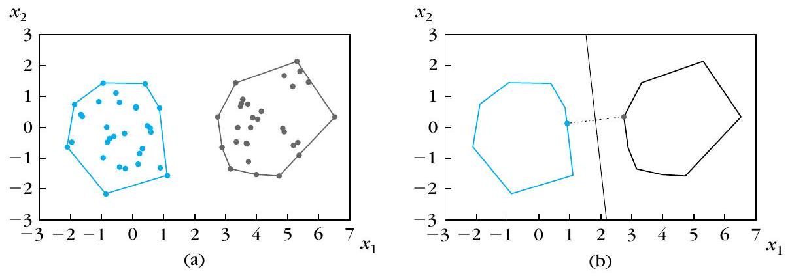
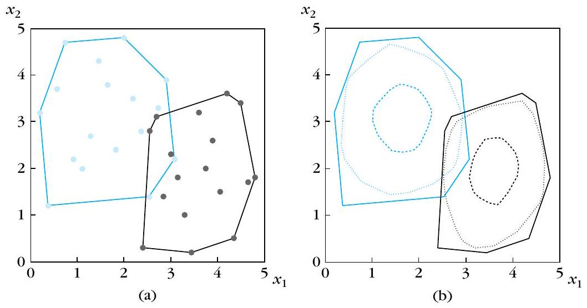
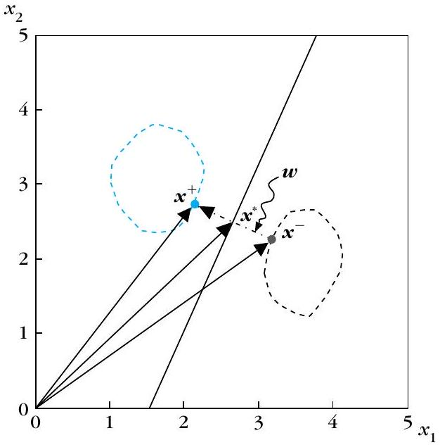
一句話：SVM 的最佳化數學看起來很抽象，但其實有一個異常直覺的幾何本質——尋找最大間隔超平面，等價於尋找兩類資料各自「凸包（convex hull）」之間距離最近的兩個點，然後畫出這條連線的垂直平分線；當資料不可分時，只要把凸包適度「縮小」成縮減凸包（reduced convex hull），同一套幾何直覺依然成立。
凸包與最近點：一組向量集合 $X$ 的凸包 $\text{conv}\{X\}$，是所有能寫成 $X$ 中元素凸組合的點集合：$\boldsymbol{y}=\sum_i\lambda_i\boldsymbol{x}_i$，$\sum_i\lambda_i=1$，$0\le\lambda_i\le1$。當兩類可分時，可以證明：求解 SVM 對偶問題，恰好等價於求兩類凸包 $\text{conv}\{X^+\}$、$\text{conv}\{X^-\}$ 之間距離最近的一對點 $\boldsymbol{x}^+,\boldsymbol{x}^-$，而最優分類超平面正是連接這兩點的線段的垂直平分線！也就是說，「最大化間隔」跟「找兩個凸包最近點」是同一件事的兩種說法。
不可分時：縮減凸包（Reduced Convex Hull）：當兩類資料的凸包本身有交集（線性不可分），最近點距離會是 0，幾何直覺失效。解法是把凸包「縮小」： $$ R(X,\mu)=\Big\{\boldsymbol{y}:\boldsymbol{y}=\sum_i\lambda_i\boldsymbol{x}_i,\ \sum_i\lambda_i=1,\ 0\le\lambda_i\le\mu,\ i=1,\ldots,N\Big\} $$ 把每個 $\lambda_i$ 的上限從 1 壓到 $\mu\lt 1$，等於不准許整個凸組合過度集中在少數幾個點上，凸包因此整體「縮水」。$\mu=1$ 時 $R(X,1)=\text{conv}\{X\}$（原本的凸包）；$\mu$ 越小，縮減凸包越小。只要 $\mu$ 選得夠小，兩類的縮減凸包就能被「縮」到不再相交，重新恢復「兩個凸集合找最近點」的幾何直覺——這正好對應 ν-SVM 的對偶問題（Lagrange 乘子的上界 $\mu=\frac{2}{\nu N}$ 恰好扮演了「縮小」凸包的角色）。
兩個特例直覺：若兩類樣本數相等（$N^+=N^-$），$\mu$ 縮到最小值 $\mu_{\min}=1/N_{\min}$ 時，兩個縮減凸包會各自收縮成一個點——恰好就是各自類別的形心（centroid）！這時候「有解」的條件簡化成最自然不過的一句話：兩類的形心不重合。這個幾何觀點不只優雅，還催生了一整條「用凸包最近點演算法求解 SVM」的計算方法路線，在某些情況下比傳統的二次規劃求解器更有效率。
操作說明與正確結果基準
- 這在做什麼：SVM 的最大間隔超平面等價於「兩類凸包之間最近點的連線的垂直平分線」。拖曳點改變凸包形狀，調 $\mu$ 縮小凸包，畫面即時重算最近點與超平面。
- 怎麼操作：拖曳綠色圓點（+1 類）或藍色三角（-1 類）；調 $\mu$ 滑桿（$1$ → $1/N_{\min}$）；按鈕切換「可分」與「相交」兩組預設資料。
- 觀察什麼：$\mu=1$ 時畫原始凸包與最近點；$\mu$ 變小時凸包縮小（只畫最近點與超平面）。切換到「相交」資料：$\mu=1$ 時兩凸包相交、最近點距離 $=0$；把 $\mu$ 調小，縮減凸包分離、距離變正——這就是 $\nu$-SVM 恢復可分性的幾何機制。
- 正確結果基準：$\mu=1/N_{\min}$ 時縮減凸包收縮成形心，有解條件 $=$ 兩類形心不重合。垂直平分線 $=$ 最優超平面 $\boldsymbol{w}\cdot\boldsymbol{x}+w_0=0$。
縮減凸包：$R(X,\mu)=\{\sum_i\lambda_i\boldsymbol{x}_i:\sum\lambda_i=1,\;0\le\lambda_i\le\mu\}$，$\mu<1$ 時整體縮水。
與 $\nu$-SVM 的對應：$\mu=\dfrac{2}{\nu N}$（$N$ 為總點數）——縮小凸包 $=$ $\nu$-SVM 對偶問題的上界。
當兩類資料線性不可分時，SVM 的幾何觀點如何恢復「找兩個凸集合最近點」的直覺？